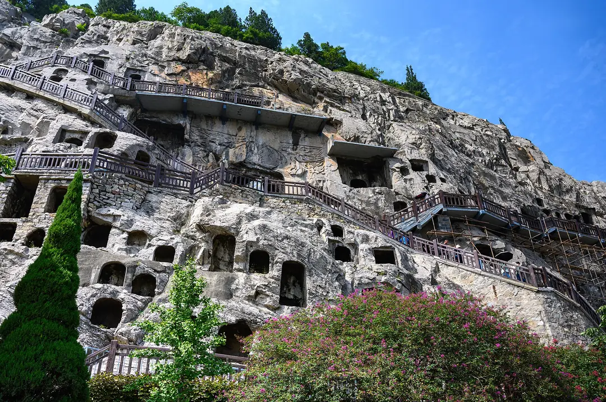
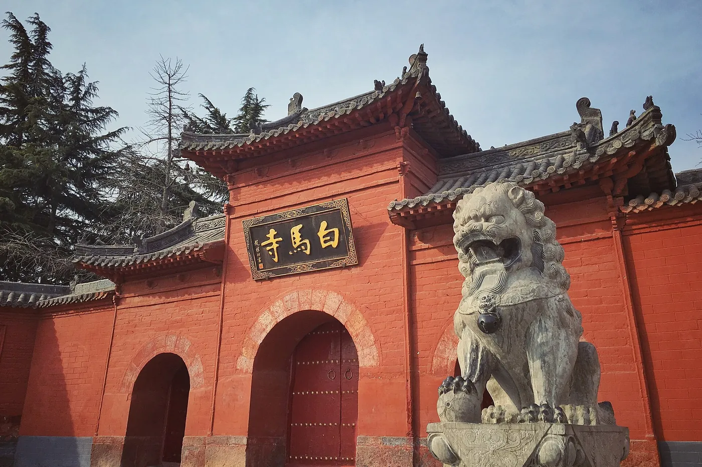

SUGGESTED JOURNEY / 7
郑洛汴的文物与都城
- DAY 01
郑州河南博物院与市内休整。
- DAY 02
商都遗址与郑州博物馆，傍晚前往登封。
- DAY 03
嵩阳书院、观星台，夜宿登封。
- DAY 04
少林寺及塔林，下午转洛阳。
- DAY 05
龙门石窟，余时看洛阳博物馆。
- DAY 06
隋唐洛阳城遗址择一细看，转开封住宿。
- DAY 07
开封博物馆、铁塔与老城街巷，结束行程。
THE DESTINATION GUIDE / 华中
中原古都·考古·黄河
河南适合建立中国早期文明和都城史的时间轴。从殷墟、二里头到汉唐洛阳和北宋开封，不同遗址代表不同年代，不能用一个朝代概括。

河南以黄河中下游平原为核心，西部伏牛山、北部太行山与南部大别山形成边界。豫北看商周遗址和太行峡谷，郑洛汴串起史前、汉唐与北宋都城；豫东是古城、会馆与平原水运，南阳盆地和信阳茶山又各有面貌。理解河南需要同时看出土文物与遗址空间，现代纪念园、复建宫殿和实物遗存应分别判断。
先用贾湖、二里头、殷墟认识早期文明，再把洛阳与开封放进历代都城迁移中。古建看真实年代和历次修缮，名人故里看文献、考古与纪念传统分别提供什么证据；黄河和山地则解释人口与交通为何如此分布。
春秋为主；牡丹和节庆看当年花期，夏季遗址区防晒。
7—10天。适合一次主题子线；完整走遍需分次安排。
郑州是便于组织省内铁路行程的入口，洛阳、安阳、开封可分别住宿，减少反复折返。登封、太行山和伏牛山景区通常还需公路接驳；去豫南应另留转场日，不把地图上的邻近等同于景区门口之间的方便。
古都游住老城外围或交通站点附近，兼顾晚餐与博物馆；山岳线可住景区门户镇，换取较早进山。郑州一地连住适合短途城市游，连续跑洛阳、开封与豫南则分城住宿更从容。
02 / A JOURNEY, NOT A CHECKLIST
路线为独立主题子线，不建议机械合并。到达日与离开日需按实际交通另留余量。
郑州河南博物院与市内休整。
商都遗址与郑州博物馆，傍晚前往登封。
嵩阳书院、观星台，夜宿登封。
少林寺及塔林，下午转洛阳。
龙门石窟，余时看洛阳博物馆。
隋唐洛阳城遗址择一细看，转开封住宿。
开封博物馆、铁塔与老城街巷，结束行程。
安阳殷墟博物馆，留足展陈时间。
殷墟遗址与中国文字博物馆。
前往鹤壁浚县，走古城和大伾山。
转焦作或新乡的太行山景区门户住宿。
仅选云台山或八里沟一处山水线，傍晚返程。
03 / THE CITY NOTEBOOK
每站不限固定景点与食物数量；重要目的地、景区名录、地方饮食及行程分别展开。评级范围与版本逐项说明。
共 17 个城市与片区
郑州的城市历史不只从铁路兴起算起，商代城墙把早期都城空间留在现代街道之间；新郑的郑韩故城又提示春秋战国的区域中心。黄帝故里的祖源纪念具有持续发展的礼俗传统，参观时应把考古城址、文献中的人物与当代祭祖展示分别理解，形成比单一“古都”标签更清楚的时间层次。
景观、历史和看点分别细读。时间为游览建议；评级按各项名录版本标注。
先按年代看史前陶器、商周青铜与汉唐器物，再选自己关心的一条线回看。器物出土地分布图能将安阳、三门峡、南阳等后续行程串起来。商代郑州商城与春秋战国郑韩故城年代相隔很长，先用展厅的地图和器物分期建立两座都城的关系。
沿开放城墙步道观察夯土的尺度，再看相关考古展陈。城墙与道路、住宅相接，比单纯寻找宫殿建筑更能理解古城边界如何留在今日城市。商代郑州商城与春秋战国郑韩故城年代相隔很长，先用展厅的地图和器物分期建立两座都城的关系。
把城址示意图与车马坑、城墙等实际开放遗存对应，认识郑、韩两个历史阶段。新郑与郑州市中心有距离，宜安排独立半日以上。商代郑州商城与春秋战国郑韩故城年代相隔很长，先用展厅的地图和器物分期建立两座都城的关系。
以郑州地区出土文物与城市沿革串联史前聚落、商代都城及后世生活，馆舍尺度较大，适合带着时间线慢读。先看出土地和年代，再比较青铜、陶器和建筑材料；它与河南博物院的全省视角互补，不必两馆重复追逐同类明星展品。
依托仰韶文化等史前遗存展示聚落、制陶和生活方式，保护展示的房基与日用器物让考古材料更具体。先读遗址分期和房屋结构，再辨认复原模型与原存遗迹；这里补充的是商代之前的郑州，不宜用后来的都城概念套在所有聚落上。
围绕商城东部城垣及相关考古材料展示夯筑、城防和城市边界，能将抽象的商代都城地图变成实际地层。先看城墙剖面与保护方式，再到室外开放段对照尺度；遗迹原状、模型和数字复原分别提供信息，适合与商都遗址同行。
以新郑本地出土器物和城市历史为线索，补充春秋郑国、战国韩国及周边聚落的背景。参观前先确认使用的馆址与开放展区，重点读青铜礼器、墓葬和郑韩故城位置的对应；馆内实物比单看祖源纪念建筑更利于建立可辨的历史年代。
以下按所列来源版本补充名录，不限固定数量；转录待核者单独提示。评级属于完整景区，不自动授予每一处内部建筑。
少林寺、塔林与嵩山山地连接佛教、武术和古建传统，塔形与碑刻能看出历代变化。先读寺院沿革再看文物，演武是另一类内容；登山路线与寺院参观强度不同，原存建筑、重修和新展示分清。
嵩阳书院的讲堂、祠宇、碑刻和古柏体现传统教育与祭祀秩序，适合与嵩山宗教建筑对照。先读书院沿革和人物关系，再看现存构件；历代重修并存，不将全部殿宇认作宋代原物，院落尺度值得慢看。
中岳庙以道教宫观、山岳祭祀和宏大轴线呈现嵩山文化，碑刻与古树也值得细读。先辨建筑年代和历次修缮，再看院落功能；今日宗教生活与历史礼制各有背景，不只把它当少林寺之外的拍照点。
告成观星台以高台、表尺和测影设施展示古代天文观测，适合先懂原理再看实物。读影长测量与历法关系，再辨原构和后期保护；它与少林寺在不同方向，不能把嵩山遗产组成点都当一条步行线。
仙人谷以登封山地溪谷、岩壁和休闲设施形成自然线，适合看森林与水景。先按体力选择正式路线，再辨人工项目与天然地貌；降雨影响水量，名称中的仙人属于文化意象，不作为考古人物活动证据。
摘星楼以登封山地、登高观景与主题休闲构成旅游空间，适合看嵩山周边丘陵环境。先读现存建筑和实际开放线路，再按体力选线；传说与新造景分别理解，不能仅凭楼名推断是古代天文观测遗址。
范家门以山村、岩溶洞穴和山地休闲设施组成登封旅游，洞内与地面线路可按体力取舍。先读岩性和洞景形成，再看主题项目；灯光与自然沉积分清，村落原屋、修复和新经营也各有年代。
郑州香山以登封山地森林、峰石与休闲步道组成县域自然线，适合比较谷地和山脊植被。先选正式线路再读古建及地貌说明；它不是北京同名香山，象形石名与传说不替代形成过程，季节景象会变化。
康百万庄园以清代河洛商人家族的宅院、防御与经营空间呈现商业社会，账房与生活分区值得细看。先读家族、行业和建筑年代，再看砖木雕刻；复原陈设与原物分清，不以民间富豪传说替代具体文献。
长寿山以巩义山地、彩叶植被与乡村休闲形成近郊线路，适合按季节看林相和村落关系。先选正式步道再读实际建筑说明；红叶受当年气候影响，长寿是文化主题，不代表参观具有医学作用。
青龙山以山林、古刹及生态休闲连接巩义人文与自然，寺院和步道可分主题看。先读现存建筑、石刻年代，再观察地形与林木；新设施与古迹分清，历史传说不直接作为每处建筑的建造证据。
杜甫故里通过纪念建筑、文献和家乡地理介绍诗人生平与唐代社会，适合结合诗作读历史。先辨传统故里、现存遗迹和新建展示，再看时间线；当代园区不是杜甫住宅原样完整保存，人物故事以可靠材料为准。
银基以动物、冰雪、主题娱乐和度假设施组成现代综合目的地，各园区服务不同。先按年龄和兴趣选一处重点，再安排交通；动物展示、机械项目与住宿分别管理，文化主题建筑不等于历史遗址。
伏羲大峡谷以红色岩壁、溪流和山地步道形成新密自然线，适合沿水系观察地层与植被。先读地质说明，再看伏羲等文化命名；传说不代表峡谷发现了人物活动遗址，水景随季节变化，正式线路外不探路。
红石林以新密峰岩、红色岩层和高处观景设施组成山地游览，岩体与人工项目可分开看。先观察地层与节理，再读科学说明；象形石名和主题造景不是形成原因，观景平台、索道等按实际运营选择。
三泉湖以新密谷地水景、山林和现代休闲设施形成短途自然线，适合选一段完整步道。先看真实水系与人工设施关系，再安排活动；水量和季节会变，名称不表示每片水面都是天然湖泊，项目依运营安排。
纪念馆与豫西抗日根据地相关旧址以文献、人物和村落空间连接战争与地方社会。先看时间线和机构位置，再辨原存、修复和复原陈设；它与南昌、延安等不同地点的主题不可混同，具体史料比口号更有信息。
古柏渡飞黄以黄河岸线、沙地与主题休闲活动组成荥阳旅游，适合看河道和堤防关系。先辨自然滩地与人工设施，再按正式项目参与；黄河水位与管理会变，不能将全部滩区视作自由穿越、戏水的公园。
丰乐樱花园以樱花品种和黄河沿岸园艺景观形成季节目的地，适合比较花色与树形。先看当年物候及实际开放园区，再排路线；盛花受气温影响，人工花园与天然林地分清，宣传花海不代表全年状态。
黄帝故里以新郑祖源纪念、祭祖礼俗和相关展陈构成文化空间，适合看认同传统如何持续发展。先辨考古材料、文献与后世纪念，再看现存建筑年代；远古人物传说不直接等于整个园区都是考古实证。
黄帝千古情以祖源文化和河南历史意象组织演艺与主题休闲，属于现代文化娱乐。先按实际剧目安排时间，再读创作背景；舞台人物、对白和仿古街是艺术再现，不能直接当黄帝时代原貌或具体史事证据。
绿博园以多地区绿化、园林与植物展示形成当代造园空间，适合比较树种配置与景观方法。先选几个主题园深入，再走水岸；展园建筑多为现代建成，地域风格不直接等于古建原物，季节花展另看物候。
方特欢乐世界以机械游乐、数字影像和主题演艺组成现代乐园，适合亲子按年龄选项目。先看当日运营与动线，再留休息；它与邻近其他方特园可能分别票制，文化场景是娱乐创作，不作为历史原址证据。
电影小镇以影视布景、河南近代城市意象和互动演艺构成文化娱乐，适合认识电影场景如何营造。先辨拍摄布景与真实城市史，再选节目；仿古街不是原存民国街区，戏剧情节不直接当人物实际经历。
戏剧幻城通过多剧场、夯土意象建筑和场景叙事呈现河南土地、粮食与人的主题，适合给完整剧目留时间。先选主剧再排小剧场；角色与场景是创作，不等于历史事件实录，建筑为当代设计。
海昌海洋公园以海洋、极地动物展示、科普和主题娱乐组成亲子目的地，位于中牟。先选几个馆区慢看物种与环境，再排场次；人工饲养展示不同于自然生态，互动和演艺项目按实际运营，不必场场追赶。
樱桃沟以郑州近郊果园、山村与休闲经营构成农旅空间，适合按成熟季看种植与采收。先辨真实生产区和游客设施，再选公共路线；采摘有时令，主题街区与原村建筑年代不同，不能全年保证挂果。
富景生态世界以黄河沿岸农业、绿地和休闲活动连接田园与河岸，适合看现代农旅。先选实际开放项目，再读水系与作物说明；滩地、生产区和经营设施各有管理，季节水位与采摘条件不能一概而论。
马拉湾以人工造浪、水上游乐和休闲设施构成夏季娱乐，黄河谷名称取自区域地理。先按年龄、体力与运营安排选项目；人工水池不是黄河主河道，季节开放与天气相关，不能将自然河滩当同类活动场。
黄河文化公园以河岸地形、水利与文化纪念景观介绍郑州黄河主题，适合配地图理解河道。先辨自然地貌、文物和新建雕塑，再走正式观景线；祖源叙事与当代纪念并非同一种历史证据，滩区按管理开放。
中原福塔以现代高塔、城市全景与相关文化展示形成郑州观景目的地，适合看平原城市尺度。先看能见度和开放层，再选时段；建筑是现代通信观光设施，玻璃与天气影响视野，文化绘景也属当代创作。
郑州园博园通过不同地区园林、建筑意象与植物呈现当代造园，适合比较布局与材料。先选少数展园深入，再走湖岸；仿古亭台多为现代建设，地域风格不代表迁来古建筑原物，花木随季节变化。
商都古城以商代城垣、考古展陈和城市公共空间连接早期都城与现代郑州，墙体地层是重点。先看原址、出土材料和城市平面，再辨复原场景；新建文旅建筑不能当商代宫殿原构，保留细读夯土的时间。
香堤湾与奥帕拉拉将温泉、水上游乐和度假配套组成现代休闲，泡池与水乐服务各有范围。先按年龄、季节和实际开放选主项目；人工池区不是自然河流，园林建筑是当代建设，票种和住宿不宜默认全部包含。
从早餐、主食到家常菜、甜点与茶饮，了解做法、吃法和地方背景，再按自己的胃口搭配。
将饧好的面坯拉成宽片，在羊肉骨汤中煮熟，配肉片、海带、豆制品等，面筋与汤香同样重要。它是郑州很有代表性的正餐，先尝原汤再加辣椒油；配料与份量各店不同，不必用汤越白或浇头越多判断好坏。
以胡椒等香料、面筋和肉或蔬菜熬成稠汤，入口辛香，面筋仍有韧性。郑州早餐常配油馍头、水煎包，也有人与豆腐脑两掺；先点小碗尝咸辣，再少量加醋，不能把各个流派都说成郑州独创。
发酵面团分成小块入油锅，炸到外表金黄、内里松软，比长油条更便于逐块配汤。它是郑州早餐摊常见搭档，刚出锅稍放凉再吃；蘸汤后会由酥转软，可以干吃一块、泡一块，体会两种口感。
薄面皮包肉馅与蔬菜，笼蒸后皮韧馅润，郑州老字号餐饮中有稳定的蒸饺传统。它不同于开封小笼灌汤包，重点是蒸面皮的筋性和馅料比例；趁热配醋与清汤，一份可作为主食，不要只当餐前零食。
鲤鱼经炸、熘或红烧，郑州餐馆常以糖醋汁突出鱼肉与酥皮的对比，属于河南共享的河鲜菜。菜单上的黄河名称不代表野生捕捞保证，点餐问清鱼种、来源与计价；多人分食，先尝鱼肉再蘸汁更能辨味。
烙好的薄饼切丝，与豆芽、青菜、肉丝等在锅内焖炒，让饼丝吸收汤汁又保留韧性。它是郑州和周边县域常见的家常主食，干湿程度随店而异；可配清汤，不必再点大份烩面，比较的是饼香而非配肉多少。
新郑枣既有当季鲜果，也有晾晒或加工后的干枣，鲜枣脆甜、干枣甜韧，吃法不能混为一种。它与当地长期枣业相连，适合作季节物产或伴手礼；先看产地、等级和配料，少量尝原味，比只追求个头更有意义。
河阴是荥阳有代表性的石榴产区，成熟果粒饱满、多汁，适合秋季剥开现吃。将它列为郑州市域当季果品更准确，并非全年都有本地鲜果；选购时看完整与新鲜，果汁或糖制品也应与鲜石榴分开评价。
收录全面，不代表一次全去。先选主题，再决定天数。
首日上午集中读河南博物院，午后走商都遗址及附近街区，夜宿郑州市内。第二天单独去新郑，先读郑韩故城相关展陈，再看黄帝故里纪念空间；若只停一天，保留郑州市内两处重点，不在南北两端赶场。
洛阳多次成为都城，不同年代的城址并不完全重合，参观顺序若按朝代而非热度安排，会更容易读懂。龙门石窟呈现北魏至唐代的造像变化，洛阳博物馆帮助补上生活、贸易与丧葬的背景。隋唐洛阳城中的遗址展示和现代复建各有用途，夜景的宏大形象不能直接当作古代建筑原貌。

景观、历史和看点分别细读。时间为游览建议；评级按各项名录版本标注。
沿伊河西岸重点比较北魏造像的清秀与唐代造像的丰厚，奉先寺宜从整体布局再看细部。过桥回望崖壁，才能感受石窟与河谷相互衬托。北魏石窟、汉唐都城和后代府城分别属于不同阶段，先读位置与年代，能避免将多个洛阳城址混为一处。
以历代都城沿革为主线，重点看唐三彩、青铜和墓葬器物。先辨文物年代与出土地点，再想象城市生活，避免只追逐几件明星藏品。北魏石窟、汉唐都城和后代府城分别属于不同阶段，先读位置与年代，能避免将多个洛阳城址混为一处。
应天门、明堂等点位可择一深入，先读遗址与复建的说明，再看门址、台基和城市轴线。不同点位之间留步行、候场与休息时间。北魏石窟、汉唐都城和后代府城分别属于不同阶段，先读位置与年代，能避免将多个洛阳城址混为一处。
通过迁建保护的历代墓葬和墓葬壁画展示地下建筑、丧葬观念与图像变化，重点不只是看墓室大小。可选汉唐宋几处对照结构与装饰，先读原出土地和年代；迁入展馆后的排列不是原墓地关系，壁画与砖石遗存按标识观看和拍摄。
在东周王城相关考古发现基础上展示车马坑与出土器物，成组车马遗存能帮助理解礼制和贵族出行。先看坑内车辆、马匹的排列，再读等级解释；遗址与后代周公故事不是同一种证据，适合在市中心安排一段完整的考古阅读。
以清代潞泽会馆等建筑和民俗展陈呈现商帮、信仰与日常生活，院落、戏台和装饰也是展品。先读会馆原有用途，再看服饰、节令及婚俗等专题；现有展示并非唐代市井复原，恰能补上洛阳古都叙事之外的明清商业与社区生活。
汉代关隘遗址位于新安，与灵宝秦函谷关分属不同位置和历史阶段，关道、台基及相关展陈有助于理解洛阳西向交通。先用地图定位崤函古道，再辨现存遗迹与修缮展示；适合对交通史和丝路遗产感兴趣者，不宜只寻找老子传说的场景。
以下按所列来源版本补充名录，不限固定数量；转录待核者单独提示。评级属于完整景区，不自动授予每一处内部建筑。
洛阳白云山以伏牛山森林、峰岭和溪瀑形成山地自然线，高山与谷地植被可对照。先按体力与接驳选一片区，再读生态说明；云海、日出与水量受天气影响，不能把每处宣传景象当同日固定节目。
龙潭大峡谷以红色岩壁、狭谷和流水侵蚀形成地质线路，适合看层理、节理与谷形变化。沿正式步道从整体看细节，再读科学说明；龙潭等石名是地方文化，不能替代形成过程，雨量会改变水景。
老君山的山脊、道教建筑与鸡冠洞的岩溶洞景组成联合5A，两片区入口和玩法不同。登山看峰林与现存建筑，入洞读沉积过程；金顶建筑、灯光和自然岩体分清，不能把联合名录当一条紧凑步行线。
重渡沟以竹林、溪流、瀑布和山村休闲构成栾川自然线，水系与居民利用可结合看。先选一条完整谷线，再读植被和地质；瀑布水量随季节变化，民宿与自然保护范围分清，不为拍摄离开正式步道。
竹海野生动物园把山地林木、动物展示与科普组成亲子路线，适合看物种与栖息环境说明。先按车行和步行安排选重点展区，再留休息；人工饲养不是野外观测，动物出现与活动会受天气和管理影响。
伏牛山滑雪乐园以山地雪道、冬季运动与度假设施提供季节娱乐，其他时段活动不同。先看当日开放雪道、年龄和指导安排，再选项目；人工造雪与自然雪景分清，滑雪不代表全年运营，山地天气也会调整服务。
天河大峡谷以栾川山地溪谷、瀑布与森林组成自然线路，适合沿水流看岩壁和植被变化。先选正式开放的完整谷线，再排接驳；水量随雨季改变，文化石名与地质说明分清，不把谷外山路当近道。
王府沟竹海以高山竹林、溪瀑和度假休闲构成栾川山水，竹林与谷地环境值得慢看。先辨自然地形和人工设施，再选正式步道；王府文化命名不意味着全园古代王宅原存，采景与住宿各有运营范围。
抱犊寨以伏牛山地形、寨堡意象和历史文化展示形成游览，崖壁与山村空间可结合看。先读具体遗存与修建说明，再辨主题场景；寨名不直接等于全部城防为古代原构，正式山路按体力选择。
龙峪湾以伏牛山森林、峰岭与山地生态形成多线路目的地，适合按高差观察林相。先选一条正式环线，再看物种与保护说明；高处云雾、季节花木与瀑布变化明显，未经开放的林地不作穿越线路。
养子沟以山地溪流、岩壁和村落休闲形成栾川谷线，适合慢看植被与水景。先读地质和真实建筑说明，再看人物传说；文化命名不直接作为古人居住证据，水量和项目随季节变化，谷外不随意探路。
木札岭以伏牛山常绿落叶混交环境、溪瀑与步道组成生态游览，山地高差带来不同林相。先按体力选完整正式线，再读植物标识；瀑布和花期受季节影响，保护林地不是无限制露营和越野空间。
天池山以嵩县山地森林、山顶水面和峰岩构成自然线路，适合比较谷地与高处生态。先读水系和地貌说明，再选正式山路；天池名称与民间传说分开，云海、日出和能见度不作为固定保证，返程也需体力。
黛眉山以黄河沿岸山地、峰林与高处远景形成地质游览，山河关系是核心看点。先按体力选正式路线，再读岩体形成和河谷说明；花木与云雾随季节天气变化，人工观景设施不等于古代原构。
青要山以峡谷、峰岩、森林和文化传说构成新安山地休闲，适合先看地形再读叙事。沿正式线路比较岩层与植被，再看具体文物说明；神话名称不能直接作为远古人物活动证据，水景随雨量改变。
千唐志斋集中墓志等石刻材料，姓名、籍贯和生平让唐代社会历史具体可读。先选几方带释文的志石细看，再读收藏与建筑沿革；刻石、拓片和复制件分清，不只欣赏书法而忽略原墓葬及文献背景。
西泰山以汝阳山地森林、岩体和季节花木形成自然线，山脊与谷地视角不同。先看当季物候和正式步道，再读地貌；花海和云雾受天气影响，人物传说与建筑实物年代分开，不任意穿越未开放山段。
恐龙谷漂流以汝阳山地河道和人工运营设施提供季节水上娱乐，漂流与古生物主题并非同一种内容。先看实际河段、天气和接待条件，再选活动；名称不代表可自由进入化石发掘点，漂流也不是全年保证。
小浪底以黄河大型水利工程、坝体与库区景观介绍防洪、泥沙和发电关系，适合配原理图看。先读工程功能，再到指定区域观察尺度；调水调沙与大流量出水有具体安排，不将宣传画面当每日节目，工程区按管理通行。
神灵寨以洛宁山地森林、溪谷和地质景观形成自然休闲，适合观察岩体与水流关系。先选正式开放路线，再看科学说明；名录使用运营单位名，实际目的地为神灵寨，寨与神话叙事不等于全部建筑皆古代原构。
花果山以宜阳山地森林、峰岭和文学文化意象构成游览，适合看伏牛山生态与地形。先按体力选正式线，再读植物和古建说明；《西游记》相关联想属于文化传播，不能把全山景观当作品事件的考古实证。
二程文化园围绕程颢、程颐及理学传播组织墓祠、纪念与教育展示，适合把人物放回宋代思想史。先辨历史遗存、重修与新建，再读文献；园林化场景不是两人当年讲学生活的完整原貌，资料来源更值得看。
龙凤山古镇以仿古街区、山地与演艺休闲组成伊川当代文旅，适合体验文化再现。先辨实际历史材料和新造景，再选项目；古镇名称不等于整片原存古城，舞台对白与仿古建筑不直接作为年代证据。
二里头博物馆以早期都邑遗址、出土器物和考古材料介绍中国早期国家，青铜、玉器与道路关系值得细读。先看地层、布局和出土语境，再辨学术推测；遗址公园与馆藏不同，名称中的夏都应结合当前研究说明理解。
白马寺以佛教传播传统、历代建筑和当代国际佛教空间形成多层寺院，适合按年代与用途阅读。先辨原有遗存、重修和新建院落，再看造像；传统始建叙事不表示今日所有建筑均为东汉原构，礼佛通道需尊重。
国花园以牡丹品种、栽培与洛阳花文化形成园艺目的地，适合比较花型、花色和物候。先看当季实际开放品种，再选一段园区；盛花受当年气温影响，人工品种园与古代御园不同，不将宣传花海当全年状态。
隋唐城遗址植物园在历史城址范围以植物、湖岸和牡丹园艺组织公共休闲，适合把城市平面与自然观察结合。先辨遗址背景和当代园林，再看物种；仿古亭廊不是隋唐原构，花期随季节变化，遗址保护区不随意进入。
关林以关羽纪念、墓祠、碑刻和古建展示后世忠义信仰，适合看制度与地方社会联系。先读现存建筑年代和重修，再辨人物史实与文学；纪念传统延续很长，不能把全部院落认作三国原存，礼佛活动保持秩序。
凤翔温泉以洛阳南部泡池、园林和度假配套组成休闲，适合与遗址看馆分日安排。先确认公共池区、住宿和其他服务，再选时段；主题建筑是当代设施，不附会古代宫苑历史，泡汤体验与医疗服务分别理解。
薰衣草庄园以花卉园艺、休闲与亲子设施形成洛阳季节旅游，适合比较栽培植物。先看当年实际花期和开放区域，再排路线；名称不保证全年都是同一种花海，生产地与主题造景分清，采摘按明确安排。
郁金香花海欢乐城以季节花卉、园艺与现代游乐形成休闲，适合按当季物候选择。先看真实花区和实际项目，再排动线；国际造景和仿古建筑都是当代设计，郁金香盛开受气温影响，不宜用一张宣传照代表全年。
万安山山顶公园以洛阳南部山脊、林木和远眺城市形成登高休闲，适合看山地与盆地过渡。先按体力和能见度选正式线路，再看地貌；高处风雾变化明显，观景设施是现代建设，未开放山段不作捷径。
洛邑古城以文峰塔、府文庙等历史节点与仿古街区休闲形成城市文化空间，适合看新旧如何并存。先辨真实文物和新建筑，再读年代；汉服、灯景和商业是当代体验，不将全区立面都当古代原构。
童话动物王国以动物展示、亲子科普和主题设施组成现代乐园，适合围绕生境或食性选重点。先慢看物种介绍和行为，再排项目；人工饲养环境不等同自然野外，动物互动和表演受实际运营安排影响。
牡丹阁以现代观景建筑、牡丹文化与展陈形成洛阳城市休闲，适合看花文化的当代表达。先读建筑修建和资料来源，再选观景时段；仿古外观不是唐代原阁，花期与远景受气候影响，展览与高处眺望可分开体验。
大河荟以城市水岸、文化展示和演艺休闲形成洛阳当代文旅空间，适合了解历史意象如何转成节目。先辨史料、艺术创作与新造景，再选择剧目；场景和对白不直接当古都原貌或具体人物史实。
魏坡·新序以孟津魏坡传统宅院与当代文化休闲连接老村更新，建筑用材和家族生活值得看。先辨原构、修缮和新设计，再选展览；新序是当代运营，不将全部店铺和景观当清代原物，居民区域尊重边界。
蕙兰产业园以栾川兰花栽培、品种与休闲展示连接山地产业，适合看植物生长条件和人工培育。先读物种与工序，再选开放区；花期和展品随季节变化，栽培品不能等同野生采挖，生产温室按安排进入。
从早餐、主食到家常菜、甜点与茶饮，了解做法、吃法和地方背景，再按自己的胃口搭配。
牛骨与牛肉熬成汤底，熟肉切片入碗，浇滚汤再撒葱花，常搭饼丝或烧饼，喝汤也是一顿早餐。洛阳汤馆重视早市节奏，各家清浓与香料不同；先喝一口原汤，再添盐辣和饼，不把全省牛肉汤都认作同一版本。
以多道带汤汁的菜依次上桌，兼有冷盘、热菜与酸辣汤味，水席说的是成套宴饮方式，并非只喝清汤。人少可点燕菜、连汤肉片等代表菜，边尝边比较汤汁层次；整席适合多人，不必为体验名称硬点二十余道。
白萝卜切细丝，经处理后呈柔韧清爽的燕菜口感，配肉丝、蛋丝等制成酸辣汤菜，常以花形装饰。它是洛阳水席的代表，名称不意味着使用燕窝；先尝萝卜丝和汤的平衡，更能理解平常原料如何形成精细席菜。
小米面等烙成不用翻面的薄小饼，再与粉条、豆制品、蔬菜等合成酸辣热汤，饼片吸汤后仍有谷物香。它是洛阳街巷汤食的一支，胡椒与醋可自行调整；应留意碗里小饼的口感，不能仅当作普通粉条汤。
豆浆水自然发酵后用来煮面，配芹菜、豆类等，微酸与豆香构成主味，常煮得柔软稠润。它是洛阳家常面食，发酵酸香与酸辣汤加醋不同；初尝可点小碗，先了解浆水味，再按习惯配辣椒与小菜。
面皮包肉菜馅，在平锅里煎焖至底脆皮韧，洛阳有老字号锅贴和街坊日常两种用餐场景。现做时底部焦香、内馅带汁，适合配清淡汤食；点单问清肉菜品种，一份已很扎实，不必再叠加多份饼面。
将猪肉、粉条等与面粉调拌，铺上蔬菜或葱段蒸透，成品咸香油润，粉面吸足肉味。它是洛宁县域有代表性的农家菜，不同于单蒸一块肉；适合多人分尝，配青菜清汤，比把它误当普通粉蒸排骨更准确。
面粉用热水烫制后和成柔韧面皮，包入肉与蔬菜等馅料蒸熟，外形较饱满，皮软而有韧劲。它与新安县街市饮食相连，是洛阳市域值得单独认识的面点；趁热轻咬散汽，配醋即可，重点比较烫面与发面的差异。
收录全面，不代表一次全去。先选主题，再决定天数。
第一天先到博物馆建立都城时间线，下午选隋唐洛阳城一个重点，晚间老城用餐。第二天将龙门石窟放在体力充足的上午，午后休息或回看伊河景观；若要去白马寺，增加一天，不与龙门、博物馆三处硬塞。
北宋东京的城市记忆十分鲜明，但今天可见的城址和建筑经历过黄河水患、重建与多次修缮。铁塔的琉璃砖、相国寺的宗教空间和博物馆的城市材料，比只寻找“宋代街景”更有层次。清明上河园借宋画意境组织当代游览和演艺，适合感受历史想象，同时应与原存文物分开看待。
景观、历史和看点分别细读。时间为游览建议；评级按各项名录版本标注。
从水系、城址与时代地图入手，理解城市为何多次重建。展陈中将北宋都城、地方工艺和后世生活并置，有助于给街上的纪念性景观定年。汴梁城址经历黄河水患与历代重修，宋代原存构件、明清遗存和当代复建应分别辨认。
远看塔身比例，近看琉璃砖上的纹样和色泽变化。它以砖材仿木构形成丰富细节，参观重点并不在是否登塔，而在观察宋代建筑艺术。汴梁城址经历黄河水患与历代重修，宋代原存构件、明清遗存和当代复建应分别辨认。
在现有寺院中读中轴、殿宇与宗教活动的关系，重点留意木雕及题记。寺院历经沿革，今日建筑年代应以现场文物说明为准。汴梁城址经历黄河水患与历代重修，宋代原存构件、明清遗存和当代复建应分别辨认。
考古揭露北宋桥河、堤岸与后世城市叠压，能够把《东京梦华录》中的水运与街市落到实际地层。参观以当日正式开放展区为准，重点看石刻、河道位置及分期图；仍在保护研究的部分不等于可随意进入的公园，宜配合博物馆材料阅读。
清代商人会馆把商帮联络、祭祀和议事结合在一起，木雕、砖雕、石雕的细密程度尤其值得慢看。先读会馆服务的人群与水陆贸易背景，再沿院落观察装饰题材；它展示明清开封的商业社会，与宋都主题相互补充，不能按宋代原构理解。
北宋佛塔遗存以砖雕佛像和塔身细部见长，今日形态经历历史变化，未必符合游客对完整高塔的想象。先观察砖面图像、层次与修补，再结合说明理解原貌和保存过程；它位于传统热门街区之外，适合对佛教建筑与城市层累有兴趣者。
以禹王庙等纪念建筑、园林和地方名人传统构成城市公园，能看到居民日常使用历史空间的方式。游览先辨祭祀、文人纪念和后增园景的不同年代，再选一两处碑刻细读；园名与传说并不等同于可证的远古建筑，适合半日轻松散步。
以下按所列来源版本补充名录，不限固定数量；转录待核者单独提示。评级属于完整景区，不自动授予每一处内部建筑。
清明上河园借宋画意境营造城市场景、演艺与互动休闲，适合体验当代宋文化再现。先选完整剧目再走街区；园内建筑不是北宋东京原址整体留存，舞台人物和对白属创作，可搭博物馆校正历史年代。
开封府以北宋府衙和包公记忆组织仿古建筑、展陈与表演，适合了解传统地方行政的解释方式。先辨史料、复原和当代演艺，再看布局；主体为现代重建，不能把所有殿堂都当包拯曾经使用的原物。
包公祠以人物纪念、建筑和相关展陈呈现包拯形象与后世清官文化，适合读历史与文学传播。先辨文献记载、戏曲传说和现存祠院年代；名录列运营企业名，实际目的地为包公祠，不是原府衙完整留存。
龙亭以高台、湖面和历代都城叠压记忆形成开封城市景观，现存建筑年代需要细读。先看地形、城市平面与文保说明，再登高；宫殿想象与后代纪念分清，不能将今日大殿直接视作北宋皇宫原构。
万岁山以宋文化意象、水浒题材与大量演艺构成当代休闲园，适合按剧目选择完整观看。先辨历史背景与艺术改编，再排动线；名录使用企业名，实际游览为万岁山，仿古街和角色对白不是宋代原物或实录。
翰园碑林以书法刻石、园林和文化展示组成当代专题空间，适合比较书体与石刻转写。先读原作、摹刻及作者来源，再选几方细看；现代刻碑不等于书家亲笔原迹，园林建筑也需按修建年代理解。
天波杨府以杨家将文化、仿古建筑和演艺形成纪念性旅游，适合看历史人物如何进入戏曲与民间记忆。先辨史料、传说和新场景，再选节目；现存园区不等于杨业家宅原样保存，艺术情节不能直接当史实。
启封故园以朱仙镇文化意象、水街与休闲展示构成当代文旅，适合与真实古镇遗存分层阅读。先看木版年画等实际工艺，再辨新建场景；仿古水镇不等于完整原存朱仙镇，传统行业与演艺各有来源。
爱思嘉以设施农业、作物展示和亲子活动组成现代观光园，适合看种植技术与生产。先比较品种、育苗和栽培方式，再选体验；观赏造型与食用作物各有管理，采摘依时令和接待安排，不随意摘取。
焦裕禄纪念园以生平文献、实物和陵园空间介绍兰考治理与人物经历，适合看具体调查和群众工作材料。先读时间线与县域地理，再辨原物和复原场景；纪念园与工作旧址功能不同，追思空间保持安静。
开封城墙展示历代城址、河患与修筑留下的边界，城门、墙体和地形可结合城市地图读。先辨原存、修复与新建段，再走一段正式开放线；今天可见形态并非北宋全城原墙，不必为绕城一圈而赶路。
兰考黄河湾依托东坝头险工、堤防和河道展示治黄工程与生态，观河步道、铁路体验和纪念资料相互补充。先读水利原理和地方治理，再看河湾；工程管理区与公共岸段不同，水位和项目按当日开放。
从早餐、主食到家常菜、甜点与茶饮，了解做法、吃法和地方背景，再按自己的胃口搭配。
面皮擀薄后包入调好的肉馅，蒸制使肉汁汇在包内，夹起时保持完整是手艺的一部分。开封小笼包进入街食与餐馆两种场景，先开小口散热、喝汤再吃皮肉；可蘸少量醋，不宜整只急吞，也不必只用大小论好坏。
糖醋熘鱼与炸焙得细酥的龙须面合成一道菜，面丝先脆后吸汁，鱼肉与酸甜汁形成层次。它是开封豫菜席面的代表，适合多人分享；可先尝少量干脆面，再蘸鱼汁，比将所有面立刻泡软更容易理解复合做法。
红薯凉粉切块后在热锅中翻炒，用蒜、酱料等调味，表面带焦香，内里软滑。它是开封夜市很常见的小吃，与凉拌凉粉口感不同；现炒现吃，先留意锅气和粉块完整度，再加辣椒，不必靠重酱掩住原味。
整鸡经盐水和香料熟制，保持鸡体整形，食用时切片或拆肉，皮肉咸香而仍有嚼劲。它是开封传统熟食，调味和卤制方式与道口烧鸡不同；可按人数买小份，配清淡蔬菜，携带成品按包装要求及时冷藏。
将焖牛脯、烧丸子、煨面筋和黄花菜等以羊汤烩成，四种材料的软韧与鲜味彼此补充。它是开封有代表性的早餐汤菜，常配锅盔、烙馍或烧饼；先尝汤与面筋，再泡主食，便能理解一碗热菜如何顶起早饭。
薄面饼夹入羊肉末、葱与调料，反复炕烙到面皮焦香，肉末不多却把油香渗进饼层。它是开封夜市常见的现做面食，趁热撕开更酥；可以两人分一张，再配汤或小菜，别把它想成大块羊肉夹烧饼。
杏仁粉等用热水冲调成香滑甜糊，再加芝麻、花生和果仁等，各摊配料与稠度不同。开封夜市常用铜壶现冲，茶字说的是饮用方式，未必含茶叶；先尝基础香气，甜度和果仁量适中，更能分辨杏仁的风味。
花生炒香研碎后与糖等制成片状或细酥糕点，咬开松散，有花生与糖香的层次。它是开封常见伴手礼，切片、卷酥等版本不尽相同；可配清茶少量品尝，选购关注新鲜度与配料，不把越甜越硬当作传统标准。
收录全面，不代表一次全去。先选主题，再决定天数。
上午读开封博物馆，下午到铁塔看建筑，再沿老城街巷用晚餐。第二天参观大相国寺及周边生活街区，若选清明上河园则留半天到晚间，提前确定演艺与步行的取舍，避免将所有夜游集中在一个晚上。
殷墟让晚商历史从文献走向可反复检验的考古材料，甲骨上的卜辞、青铜器和墓葬共同显示王朝的社会结构。安阳的文字主题不止辨认几个古字，也包括书写材料、字形演变和知识传播。博物馆与宫殿宗庙、王陵等遗址相互补充，空间距离和阅读时间都比打卡照片更值得预留。
景观、历史和看点分别细读。时间为游览建议；评级按各项名录版本标注。
先看晚商社会与考古发现的总览，再选甲骨、车马或青铜工艺细读。不要把每块骨片都当完整故事，结合释文和出土环境才能理解占卜材料。甲骨卜辞、墓葬组合与宫殿基址分别提供不同证据，将馆藏出土地和现场位置相互核对，才能理解晚商都城。
在实际开放区对照夯土基址、墓葬和复原说明，建立宫殿宗庙与王陵的空间概念。博物馆中的实物与遗址现场的地形要结合观看。甲骨卜辞、墓葬组合与宫殿基址分别提供不同证据，将馆藏出土地和现场位置相互核对，才能理解晚商都城。
从甲骨、金文到后代书体追踪同一字形，留意不同文字材料如何影响笔画。现代书写与各类文字展示也值得看，不必止于商代部分。甲骨卜辞、墓葬组合与宫殿基址分别提供不同证据，将馆藏出土地和现场位置相互核对，才能理解晚商都城。
从本地考古材料和历代器物补充殷墟之外的城市历史，适合观察商周之后的安阳如何发展。先看市域地图与出土地，再选陶瓷、墓葬或地方专题深入；它与殷墟博物馆、文字博物馆分工不同，可安排在连续遗址行程之间作为室内阅读。
塔身上大下小的比例、砖雕和寺院环境形成安阳老城鲜明的建筑标记，现存塔与多次修缮需要结合文物说明理解。先在院内退后看整体，再近看装饰，不必以能否登塔判断价值；与殷墟相隔多个朝代，是认识后代城市宗教空间的入口。
老城内以高台承托殿阁的古建筑遗存，院落规模不大，却能看出传统城镇对地形和建筑高度的利用。重点观察台基、木构及周围街巷关系，建筑年代与修缮以现场说明为准；开放可能受文保管理调整，可在外部公共空间观察，不为进院攀越。
围绕北宋韩琦纪念传统形成的祠庙和园林遗存，碑刻、堂名与文章题记把地方人物放回宋代政治文化。先分辨历史建筑与后世纪念设施，再读人物生平和文献；适合在老城慢行中停留，避免将整座现存院落都认作韩琦当年的居宅。
以下按所列来源版本补充名录，不限固定数量；转录待核者单独提示。评级属于完整景区，不自动授予每一处内部建筑。
红旗渠水利工程与太行大峡谷山水组成联合5A，可分别理解人工引水、地方社会与自然地形。先选一条工程或峡谷线，再安排转场；纪念展陈、原渠与现代游乐不同，联合名录不代表各入口相邻。
羑里城围绕周文王与《周易》的纪念传统、庙宇和展陈形成文化空间，适合区分文献、传说与现存建筑。先读遗址和修缮说明，再看碑刻；不能因人物故事悠久就认定今日所有殿堂都为商周原构。
汤阴岳飞庙通过祠院、碑刻与生平展陈呈现人物纪念及后世忠义文化，建筑本身也有时代层次。先辨史料、文学与现存年代，再看空间布局；后世塑像和故事不直接作为南宋事件原证，参观不只看名句。
马氏庄园以晚清官宦宅院、家族空间和生活陈列展示豫北建筑与地方社会，院落分区值得细看。先读主人经历、建造和使用史，再看砖木雕刻；原物与复原室内分清，不将全部后增陈设当原宅遗物。
万泉湖以林州水域、泉流与休闲活动形成山地水景，适合看水系与村落关系。先选正式岸线和实际项目，再读自然与人工部分；水上娱乐和游步道服务不同，水位、天气影响可做内容，不默认全湖可自由进入。
古板栗公园以林州栗树、山地农业和村落生活展示地方物产传统，树形与种植方式值得观察。先读古树保护和树龄依据，再走公共路；花果采收有时令，不将所有栗树都称古树，生产园不任意采果伤根。
汤河湿地以河流、滩地和植被生境构成生态休闲，适合观察河道与豫北聚落的关系。先选正式开放步道看鸟类和水系，再读保护说明；水位与季节改变景观，核心湿地不是自由野餐、捕鱼或穿越区域。
道口古镇以大运河岸线、商贸街巷和传统建筑呈现滑县市镇生活，烧鸡等行业也可联系看。先辨原存、修缮和新经营，再读建筑用途；古镇不等于每条街都保持明清原貌，居民院落与公共路线分清。
梦幻谷以汤阴主题游乐、演艺和亲子设施组成当代娱乐，适合按年龄与兴趣选项目。先看当日开放与动线，再留休息；仿古或童话建筑是创作场景，不作为古代遗址，季节活动也不代表全年固定运营。
曹操高陵以墓葬考古、出土器物和博物馆展陈介绍汉魏人物与丧葬制度，墓志类证据需放回语境。先读发掘经过与学术说明，再看原址保护；小说形象、民间墓说与考古材料分清，复原场景不是原物。
翔宇工业景区以康复设备研发、制造展示与生态厂区连接内黄现代产业，适合看材料到设备的流程。先读工艺、模型和开放生产路线，再看科普；参观不等于接受医疗服务，生产区与游客区分别管理。
从早餐、主食到家常菜、甜点与茶饮，了解做法、吃法和地方背景，再按自己的胃口搭配。
宽扁粉条配豆腐、青菜等在骨汤里煮透，蒜汁、辣椒和胡椒再按口味添加，粉条软韧而汤鲜。它是安阳市区常见早餐，常搭饼食用；先吃粉条和汤再调味，一碗中食材比例比肉量更能反映当地的日常吃法。
滑县道口的整鸡经处理、油炸上色与香料卤煮，肉质酥软，鸡香和卤香相融。它是安阳市域重要熟食，适合多人拆分，不同于开封桶子鸡偏紧实的口感；热吃与冷切各有风味，远途携带关注熟食保存要求。
将发酵豆浆水与米、黄豆、花生或蔬菜等煮成稠润饭粥，带明显的自然酸香。它体现安阳利用豆浆发酵的家常传统，与普通白粥不同；初尝点小份，先试酸度，再配咸菜或饼，不用越酸越好来衡量制作。
粉条与淀粉、调料等蒸制凝成块状，切片后可煎、炒或入烩菜，外层焦香、内里柔韧。它是安阳宴席与家常菜的重要配料，并非肉皮冻；单吃煎皮渣与烩菜里的软皮渣可以对照，调味宜留出粉香。
把酥肉、丸子、皮渣、豆腐和蔬菜等合锅烩煮，让油炸料的香味与汤汁融合，具体搭配随家庭和季节变化。它在安阳聚餐与日常中都常见，重点是多种质地；可先少量夹取各料，再配馍，不必追求固定菜谱。
荞麦粉等配血料蒸成糕，切块后炸到表层酥脆，内里仍软，再配蒜汁等食用。它是安阳传统小吃，点餐应先了解原料及个人接受程度；现炸后稍放凉，比较外壳和糕体，不能将名称误解为普通甜米糕。
面团通过揉制、起酥和烘烤形成层次，饼面常有芝麻，外酥而内里保留麦香。它是安阳水冶镇有代表性的面食，适合早餐配汤或现吃作点心；热饼更能辨出层酥，回温后口感会变化，不需要用夹肉来遮盖面香。
以肠衣包入谷物粉浆、血料及调味等熟制，切片后煎炒，入口软韧并带焦香，具体配比各家不同。它是内黄县有代表性的街市食品，先询问原料与做法再点；适合小份尝鲜，与普通纯肉香肠分开认识。
收录全面，不代表一次全去。先选主题，再决定天数。
第一天把大半天留给殷墟博物馆，随后只安排轻松的市区晚餐。第二天看殷墟实际开放遗址，再去文字博物馆；若想读完大量展板可增加半天。汤阴、林州属于安阳周边另线，不与殷墟全部塞在同一天。
嵩山周边的遗产显示的不只是少林武术，也有国家礼制、儒学教育、道教祭祀和古代测天的关系。“天地之中”的观念应放回中国传统地理与天文认识中理解。少林寺的宗教生活、嵩阳书院的教育空间和观星台的观测方法各有重点，按主题分日比一次爬完山更能体会。
景观、历史和看点分别细读。时间为游览建议；评级按各项名录版本标注。
先看寺院中轴与碑刻，再到塔林比较不同年代塔形和铭文。武术演出属另一种观看内容，若想兼顾寺院与山路，应主动减少其他远处点位。这些建筑是嵩山地区礼制、宗教、教育和测天传统的不同组成点，各自的年代与功能比统称少林文化更重要。
从讲堂、祠宇与院落秩序看传统书院的学习和祭祀功能，留意古柏与碑刻，建筑所经历的重修也应结合说明阅读。这些建筑是嵩山地区礼制、宗教、教育和测天传统的不同组成点，各自的年代与功能比统称少林文化更重要。
观察高台、量天尺与影长测量的关系，先读原理图再看实物空间。它位于告成，与少林寺不同方向，适合单独安排交通。这些建筑是嵩山地区礼制、宗教、教育和测天传统的不同组成点，各自的年代与功能比统称少林文化更重要。
密檐砖塔以独特多边形平面和层叠檐口著称，是观察中国早期佛塔形制的重要实物。沿允许范围绕塔看比例与砖构细节，再对照年代说明；塔身与寺院其他建筑并非一定同龄，适合与少林塔林的后世墓塔作比较，理解用途和结构的差异。
汉代石阙是中岳祭祀相关建筑遗存，阙身雕刻和题铭可见当时的礼制与图像表达。保护设施内的原石不宜当作普通石牌坊理解，先读构件位置和题材，再观察风化痕迹；与中岳庙相连的纪念传统很长，现存各部分年代需要分别判断。
汉代少室阙保留石构、画像和文字等材料，把山岳祭祀、日常生活图像与古代建筑形式连接起来。先看保护展示的构件全貌，再选可辨的雕刻细节；它与少林寺属于不同历史主题，按正式开放安排参观，不因同在嵩山就混写为佛寺的附属门。
汉代石阙与启母祠纪念传统相连，画像和铭刻呈现了古人对山岳、神话与礼制的理解。观看时区分传说内容和石刻本身可证的时代，关注原石及保护环境；适合与太室、少室两阙对读，不宜只为了收集世界遗产组成点而匆忙转场。
从早餐、主食到家常菜、甜点与茶饮，了解做法、吃法和地方背景，再按自己的胃口搭配。
面坯做成圆饼，表面沾芝麻后烤到焦黄，饼盖酥香、内层有麦香，现出炉时层次最清楚。它是登封街市的代表面食，相关人物故事属于民间传说；可配汤食作早餐，先尝原味，不必夹肉或厚酱才算完整一餐。
因产地与长条形状得名，一端厚、一端薄，在锅内以文火炕烤成熟，外脆内韧，麦香持续。它是登封颍阳的地方饼食，名称并不表示使用牛舌；适合掰开配汤，比较厚薄两端的口感，比只看饼的大小更有意思。
以发酵浆水煮面，配豆类和蔬菜等，微酸与谷物香相互融合，在中岳庙附近庙会和日常餐桌都可见。它与洛阳浆面共享中原发酵面食传统，各家浓淡不同；先少量尝原汤，再添辣椒，面条通常偏软。
小米或黄豆炒香磨粉，熬成面汤后配豆腐丁、黄豆、花生、枣、芝麻等，咸香而稠润。登封春节前后和家常饮食中都能见到，名字虽有茶却不等于茶叶饮料；点前问清甜咸版本，小碗配烧饼即可。
先将面饼炕制成胡粕馍，再切成小块，与已经炒香的蔬菜等合锅烩煮，让饼块吸收菜汁。它是登封君召一带的地方吃法，介于饼食和烩菜之间；现做时有面香与软韧感，可当主食，配料随店家询问。
骨汤、淀粉、粉条和肉末等调拌后熟制凝结，切块可蒸热、煎制或烩菜，口感软韧、带肉汤香。它流行于登封东部及周边，属于中原粉食的一种；名字相同也可能与外省焖子不同，先问是煎食还是入汤。
面团擀成薄片切成面叶，以酸味汤汁煮熟，常配蔬菜、葱花等，热汤里有柔软面片和清爽酸香。它是登封常见家常面食，尤其适合连续吃烙烤饼之后换口味；酸辣可先少量调，主食与汤同食，不必再配大份面点。
芥菜疙瘩等切丝，经腌制或焖制调味，保留脆感与冲鼻辛香，常作为饼面旁的小菜。登封及中原多地共享这种冬日储菜吃法，不能宣称一城独有；先夹少量配烧饼或热粥，留意不同版本的咸度与辛辣。
收录全面，不代表一次全去。先选主题，再决定天数。
首日少林寺与塔林慢看，体力合适再选一段正式开放山路，夜宿登封。第二天上午嵩阳书院，下午包车或乘合适交通去告成观星台。中岳庙可替换其中一处，若还要长线登山则再加一天。
太行山东南缘由陡崖、峡谷和山前平原过渡，焦作与新乡都可进入山水景区，却不能当成一个紧凑公园。云台山重在峡谷层次，八里沟一带强调山谷与瀑布；山村道路又体现人与险峻地形的长期相处。水量和能见度随季节变化，看到的是当日自然条件，不是宣传照固定的样子。
景观、历史和看点分别细读。时间为游览建议；评级按各项名录版本标注。
红石峡可观察红色岩壁、层理和水流侵蚀形成的狭谷，其他沟谷择体力安排。景区内部接驳与排队也占时间，不宜只按地图步行距离估算。太行山峡谷、山前平原与煤矿工业分别塑造两市生活，山水之间留半天读馆，能补上地貌之外的城市历史。
沿正式步道观察从谷口到瀑布区的植被和崖壁变化，水量受降雨影响。重点放在一条完整沟谷，勿为追赶远处观景点走未经开放的小路。太行山峡谷、山前平原与煤矿工业分别塑造两市生活，山水之间留半天读馆，能补上地貌之外的城市历史。
地方考古器物与城市历史展陈能补上云台山之外的怀川平原背景，陶仓楼、陶器等材料尤其适合联系汉代生活理解。先读器物出土地与用途，再看河流、农业和聚落关系；与山地行程安排在不同半天，比只把焦作当入山中转站更有内容。
馆藏从地方历史文物延伸到书画、碑帖等专题，能认识太行山前和黄河平原之间的文化交流。先按年代走基本陈列，再选一个艺术专题，避免所有展厅都赶一遍；它是新乡市区的重要室内目的地，适合与焦作分别住宿的路线衔接。
新乡曾是短暂设置的平原省省会，相关旧建筑与城市道路留下近现代行政和建设的线索。先读平原省成立、撤销的历史背景，再按允许开放范围观察建筑外部；部分建筑有实际使用单位，不是可自由穿行的景区，公共街区观看也能理解时代变化。
围绕赵匡胤陈桥兵变及宋初建国的历史记忆形成纪念空间，陈桥镇的位置也提示古代驿道和都城外围交通。先分辨文献记载、后代纪念与当代复原，重点看展陈的时间轴；与开封宋都行程可以联系，但黄袍加身的戏剧化展示不等于原场景实证。
以孟州本地出土文物与历史资料呈现黄河沿岸聚落、交通和文化生活，适合与怀川风味或孟州县城行程组合。先看遗址分布与器物年代，再选陶瓷、碑刻等专题，具体展厅依开放安排；它能补充太行山景之外的平原历史，不应以韩愈一位人物概括所有地方文化。
以下按所列来源版本补充名录，不限固定数量；转录待核者单独提示。评级属于完整景区，不自动授予每一处内部建筑。
宝泉以峡谷、库水、瀑布和高处步道组成太行山地目的地，大峡谷与崖上园区强度不同。先按体力和天气选主线，再看地形；水量与运营影响可游内容，索道电梯仍需排队和步行，不把各片区当紧凑小园。
万仙山以太行村落、崖壁与挂壁公路等交通景观形成多片区游览，适合看人如何适应险峻地形。先选正式村谷线，再读道路修筑史；居民巷道与经营区各有边界，宣传角度不等于全线适合步行或驾车停车。
关山以新乡太行山地的岩层、峡谷和森林形成地质休闲，适合观察红色岩壁与层理。先读地质说明再选正式步道；象形石名不是形成原因，雨季与枯水水景不同，谷外保护林地不作为近路穿越。
五龙山以动物展示、水陆游乐与休闲设施形成辉县现代亲子园，各部分服务可能不同。先按儿童年龄选重点，再看实际运营；人工展区与自然山体分清，主题建筑不是古代遗址，不必为项目数量赶完所有区域。
轿顶山以太行峰岭、山脊与观景路线形成辉县山地休闲，高处视野与天气关系密切。先看体力与正式道路，再读岩层地貌；轿形名称是视觉联想，不能代替科学解释，未开放山脊和悬崖边不作探路范围。
龙卧岩以卫辉山地岩壁、溪谷和乡村休闲组成自然线，适合看丘陵向太行过渡。先选正式路线读岩性与植被，再辨主题项目；石名传说不直接作历史证据，水景、花木和运营随季节变化，交通不只按直线估算。
跑马岭以卫辉山地森林、岩体和户外休闲形成旅游，适合选一条登高线看太行山前。先读地貌与实际建筑说明，再选项目；名称不表示可自由骑马或越野，经营活动与公共步道范围分清，云雾影响远景。
比干庙以人物纪念、墓祠和碑刻呈现后世忠义文化，现存建筑与历代修缮提供具体历史层次。先辨文献、传说和原物年代，再看布局；殷商人物的纪念传统不代表全庙建筑均为商代原构，家族源流也需读材料。
潞简王墓以明代亲王墓葬、石刻和神道建筑展示藩王礼制，布局和器物需结合身份读。先看墓主人与年代，再辨原墓、保护设施和复原；未开放地下空间不进入，不能只以陵墓规模判断历史意义。
凤湖以平原示范区湖面、湿地与城市绿地组成公共休闲，适合看新城和水域关系。先选一段正式步道，观察桥梁、植被与居民活动；人工园林与自然生境分清，水上项目和公共岸线服务不同，季节水位会变。
京华园以传统文化意象、园林和休闲设施组成新乡现代主题空间，适合看文化符号的当代表达。先辨展品来源、仿古建筑和实际历史资料，再选项目；园内村寨场景不等于各地原生聚落，演展与日常生活不同。
酱卤文化园展示肉品加工、调味工艺与现代食品生产，适合理解原料到熟食的流程。先看企业史、设备和开放展示，再辨真实生产与模拟体验；厂区按指定路线，品尝购物与知识参观分开，不把品牌故事都当古代史。
云台山、神农山与青天河组成焦作联合5A，分别呈现红岩峡谷、山脊森林和水库河谷。先选一片区完整游览，再安排县域转场；多入口并非一个紧凑公园，现代设施、宗教遗存与自然地貌各读说明。
陈家沟以太极拳传承、家族建筑和当代教学展示连接温县地方文化，适合看实际练习与工艺资料。先辨文献、纪念建筑与新场馆，再选正规体验；人物故事和流派说法有不同来源，不能把全村建筑都当创拳原物。
莫沟以传统窑洞、村落空间与乡村更新形成孟州休闲，适合观察地形、住宅和生产关系。先辨原构、修缮与新民宿，再走公共巷道；游客经营和居民生活并存，不将全部仿古立面都视作同一时代原貌。
圆融寺以佛教寺院、石刻与山地环境构成焦作宗教文化线，现存建筑和历次重修值得细读。先看文保说明、造像与院落，再选步道；传统始建叙事不意味着今日每座殿宇同龄，礼佛活动保持安静与通道。
嘉应观以清代黄河治理、祭祀与碑刻呈现国家水利纪念，建筑布局和治河文献相互补充。先读黄河地理与营建背景，再看原构细节；宗教形式服务治河制度，与普通道观功能不同，复原陈设与原物分清。
影视城以仿古宫殿、街巷布景和演艺组织现代文化娱乐，适合了解影视场景如何设计。先辨拍摄与真实历史，再选节目；建筑和对白属于当代创作，不等于汉唐原城或人物活动实址，历史问题可搭博物馆核对。
森林动物园以动物展示、科普和城市绿地形成亲子参观，可按食性或生境选重点。先读物种标识，再慢看行为；人工饲养不是野外观测，动物活动与开放区受天气和管理影响，互动项目不代替完整看展。
南水北调天河公园以工程过河、渠道与城市公共空间介绍跨流域调水，适合配原理图看结构。先读水流方向和工程功能，再到开放观景处；运行设施与游客区不同，不将全段渠道当可自由下水或穿行的步道。
大沙河公园以城市河道整治、湿地与慢行绿地展示焦作生态建设，适合观察桥梁和居民生活。先选一段正式岸线，再读水系和生境；人工恢复与原生自然分清，季节水位影响景观，保护水域不随意进入。
茶饮梦工厂以现代饮品原料、加工与产业展示连接温县制造业，适合看从配料到成品的流程。先辨真实生产、科普模型和体验项目，再按预约参观；企业场馆不是传统茶馆古址，品尝购物可与知识展示分别选择。
西大井1919以煤矿工业遗存、厂房与城市记忆展示焦作近代资源产业，适合看生产设施与工人生活。先读矿业时间线，再辨原设备、修复和新艺术空间；矿井保护与公众路线不同，不作自由探矿或废墟探险。
伯玉君子文化区以长垣蘧伯玉祠堂、地方人物和儒家君子文化组织参观，适合看碑刻与纪念传统。先读现存祠院年代、文献和修缮，再辨新展陈；后世文化展示不代表全园都是春秋原址，人物故事按来源理解。
从早餐、主食到家常菜、甜点与茶饮，了解做法、吃法和地方背景，再按自己的胃口搭配。
驴肉在带香料的汤中熟制，切片后可配汤与饼，肉纤维紧实而不应干柴。它是焦作沁阳等怀川地区的代表风味，闹汤体现汤肉之间的搭配；先吃原肉再蘸汁，比把驴肉都夹进重酱烧饼更能尝出地方卤香。
面粉炒香后与芝麻、花生等果仁及油脂调成茶料，用沸水冲煮成咸香稠糊，入口细润。它是武陟传统早餐与伴手礼，名称有茶却不是茶叶饮品；先看甜咸和配料，一碗配少量饼食即可，不必叠加多份主食。
熟面条经晾或拌油处理后，与豆芽、蔬菜、肉丝等在锅内炒香，成品干爽带韧、能吃到锅气。它是孟州街市日常的一种面食，浇头和调味随店而异；现炒现吃更香，搭清汤可以缓和油润，不将普通炒面强说成独有发明。
铁棍山药蒸、煮或炖后粉糯，皮薄而肉质紧密，原味蒸食更容易分辨山药香。它联系温县和怀川山药种植传统，作食材与干粉加工品应分别认识；点菜问清做法，避免用药效宣传替代口感和产地信息。
羊肉先煸炒调香，再配酱料与香辛料焖到肉软汤浓，可续加蔬菜、豆制品和面食。它是新乡有代表性的聚餐菜，红焖指的是烹调风格；先吃肉尝汤，再加蔬菜，比一开始把所有配料下满更能保留层次。
面坯经揉制、起层和烙烤，外皮焦酥，内部仍有柔韧麦香，大小与夹馅版本随店不同。它是延津街市重要的早餐面食，可夹肉也可原味配汤；刚出炉先掰开尝饼心，更能看出和面火候，不只比较馅料分量。
宽面片在肉汤里煮熟，配熟肉、海带或豆制品等，突出面筋与汤的鲜香，是原阳县域常见的扎实正餐。它与郑州烩面同属河南面食体系，各家汤底有差别；先尝原汤再添辣椒，少量配小菜即可。
面团经饸饹床压成圆条，直接入水煮熟后配肉汤或卤汁，较细面的弹韧感不同于手擀宽面。它是获嘉传统面食，在新乡市域值得分县品尝；点单先问汤面还是拌卤，按食量选碗，不以面越粗越筋道作唯一标准。
发面配油酥、芝麻等烙烤，表面焦香，内部层次疏松，是新乡有代表性的传统烧饼风格。它既可单吃，也可搭汤作早餐，品牌店与街坊版本有区别；趁热掰开比较酥层和麦香，带回家后的回烤口感另当别论。
辉县太行山地出产山楂，鲜果酸涩，常做成糕、片或糖煮制品，体现山地果品的保存利用。它应列为特产零食而非正餐菜肴；先看山楂与糖的配比，少量配茶尝酸甜，也可与当季鲜果的质地作比较。
收录全面，不代表一次全去。先选主题，再决定天数。
第一天抵焦作并休整，第二天云台山走一条主线，是否续住取决于体力。若再去八里沟，第三天先完成跨城及山前转场，第四天入谷；时间不足则二选一，把山中停留做完整，不以一天连跑两市为目标。
南阳盆地与信阳丘陵同属河南南部，却有不同的气候与文化重心。南阳汉画像把汉代的生产、神话与礼仪刻进石材；信阳处于南北过渡带，茶山、稻作与山地避暑形成另一种生活节奏。三国人物的纪念空间与实际历史研究各有侧重，南阳和信阳也不宜被当作同一天能顺带走完的邻区。
景观、历史和看点分别细读。时间为游览建议；评级按各项名录版本标注。
先辨画像石原有的墓葬语境，再看车骑、宴饮、神兽等题材。注意线刻、浮雕及拓片的差异，把图像当作汉代观念的材料，而非现场写实照片。南阳汉代城市文化与信阳大别山历史跨度很大，先辨展品产地与场所年代，两市应分段住宿和参观。
重点看纪念建筑的院落、碑刻与后世纪念传统，了解诸葛亮形象如何被不断讲述。争议性历史归属宜尊重展陈证据与学术表述。南阳汉代城市文化与信阳大别山历史跨度很大，先辨展品产地与场所年代，两市应分段住宿和参观。
沿开放游线看山地植被与近代别墅建筑，比较避暑地与山下城市的气候感受。雾天不强求远景，建筑和林间步行仍可成为主要内容。南阳汉代城市文化与信阳大别山历史跨度很大，先辨展品产地与场所年代，两市应分段住宿和参观。
以南阳盆地的考古和历史文物串联史前聚落、楚汉文化与后代生活，适合在去汉画馆之前建立地方时间线。先看各县出土地分布，再选青铜、陶瓷或工艺专题；博物院与专题汉画馆的视角不同，不需要只围绕三国人物来理解整座城市。
以张仲景纪念传统、祠院建筑和医药文化展示为核心，展示中医经典传播及后世尊崇人物的方式。先读人物生平与文献，再分辨墓祠、碑刻和新增展馆的时代；参观价值在医学史与纪念文化，不将传说、疗效宣传或现代复原直接视为考古事实。
以淮河上游与大别山周边出土器物和地方历史展陈建立信阳的地域坐标，楚文化、汉代生活及后世交流都可择重点阅读。先看河流和交通地图，再联系鸡公山、茶乡行程；它能补足山景和茶饮之外的历史层次，适合留出安静的完整两小时。
以区域革命历史的文献、实物和人物关系为主线，讲述大别山根据地与周边社会的变化。先按时间轴理解不同阶段，再选重要事件细读，并与新县等县域旧址相互核对；纪念馆在信阳市区，不与新县鄂豫皖苏区首府革命博物馆混为同馆。
以下按所列来源版本补充名录，不限固定数量；转录待核者单独提示。评级属于完整景区，不自动授予每一处内部建筑。
西峡恐龙遗迹园、伏牛山和老界岭组成联合5A，化石考古与高山森林是不同主题。先选一片区看出土地层或山地生态，再排转场；恐龙模型与化石分清，联合评级不表示各入口相邻，滑雪场另有季节运营。
内乡宝天曼以伏牛山森林、物种与山地步道呈现生态价值，适合按海拔看植被。先读自然保护与开放范围，再选路线；科研保护区不等于全部可游览，野生动物出现不能保证，未经开放的林地不作穿越。
内乡县衙以传统官署布局、厅堂与文书展示介绍州县行政，空间分区与实际用途很有信息。先读建造、修缮和制度，再看器物；复原审案与演艺属于现代解释，不将全部陈设当原物，慢读比只拍门楼更有价值。
宝天曼峡谷漂流利用内乡山地河流与运营设施提供季节娱乐，适合按天气和接待条件选择。先看正式开放河段与指导，再参与；与森林游览不是同一项目，自然溪流不等于全段可自由下水，雨量影响运营。
云露山以内乡山地溪瀑、峡谷和森林构成自然线路，适合沿水系观察岩壁与植被。先选一条正式线再看地质说明；瀑布随雨量变化，人物或仙境命名是文化意象，人工设施与自然景观分清，返程需留体力。
二龙山以豫西南峰岭、森林和山地休闲形成自然目的地，适合看伏牛山支脉与谷地关系。先按体力选择正式步道，再读具体建筑说明；名称不代表龙的历史遗迹，云雾与花木受季节影响，不任意离道穿越。
七峰山以方城山地岩体、林木和登高线路构成自然休闲，峰群轮廓与层理值得观察。先读地质形成和实际古建说明，再选正式线；象形山名不是成因解释，现代观景设施与自然峰体分清，天气影响远景。
七十二潭以溪流侵蚀、石潭和谷地植被形成方城水景，适合顺水系比较不同岩面形态。先选正式步道，看科学说明再看象形名；七十二不是必须数满的任务，水量随季节变化，未开放河段不作戏水或捷径。
德云山植物园以山地花卉、园艺与亲子休闲组成现代旅游，适合按物候认识栽培植物。先看实际花期、品种和开放项目，再选线；人工花海与自然森林分清，主题庄园不是古代园林原址，采摘依接待安排。
山陕会馆以清代商帮、祭祀和议事建筑呈现赊店商贸，砖木石雕是重要工艺实物。先读水陆交通与行业背景，再看院落分区；原构、修缮与复制陈设分清，关帝信仰与商业组织相连，不只欣赏正门装饰。
丹江大观苑以库区山水、文化主题与休闲设施组成淅川旅游，可从岸线看水库和移民环境。先辨自然地形、新建建筑与文献展示，再选线路；水位和天气影响项目，主题造像不是古代文物，库岸按正式范围开放。
香严寺以古建、碑刻和佛教传承形成淅川人文山景，寺院与山地地形相互衬托。先读现存建筑年代及历次重修，再看造像；始建传统不意味着今日全部殿宇同龄，礼佛空间与游客路线互相尊重。
南召宝天曼以伏牛山森林、溪谷和生态休闲为主，适合看海拔与林相变化。先读保护范围和正式入口，再选一条线；它与内乡同名宝天曼不是同一接待点，科研保护区与公众游览区分清，不自行穿越山林。
五朵山以南召山地峰岭、宗教文化和现代休闲设施构成自然线，适合看岩体与寺观位置。先读具体古建说明，再按体力选路；山名和传说不确定全部建筑年代，云海水景随天气变化，索道仍需步行接续。
淮源以桐柏山地水源、森林和淮河文化展示构成目的地，适合配水系图理解源头与下游。先看正式开放山路和水源说明，再读宗教遗存；源头称谓不等于可任意进入的山林，神话与地质生态分别理解。
鹳河漂流依托西峡河道和人工运营设施提供季节水上娱乐，可看山地水流与谷地。先确认开放河段、天气与指导，再选择；它与老界岭登山不是同一服务，天然河流不能全段自由漂行，水量和运营会调整。
老君洞以西峡岩溶、山林与道教文化记忆形成自然人文线，适合看洞景与后世纪念关系。先读岩性、沉积及现存建筑说明，再选线路；传说不代表洞穴形成原因，人工灯光与天然结构分清，洞外保护区不探路。
寺山以西峡近郊森林、山地步道与宗教文化构成休闲，适合登高看县城与河谷。先读寺院沿革和现存建筑，再选择短线；古代记忆与新建设施各有年代，季节花木和能见度会变，不必走完全部山路。
龙潭沟以西峡花岗岩谷地、溪流和瀑布形成自然线路，适合比较岩块与流水侵蚀。先选一条正式谷线再读地质说明；龙潭命名是文化联想，水量受降雨影响，人工设施与自然景观分清，不任意下到未开放潭边。
国际玉城以镇平玉雕交易、工艺与产业展示组成现代商贸空间，适合看原石、设计和雕琢关系。先比较工艺与材料，再辨商品和馆藏；产业园不是古代玉器遗址，购买与学习可分开，不把销售故事当出土证明。
花洲书院联系范仲淹任职邓州与教育传统，园林、碑刻和展陈可结合诗文读。先辨历史遗存、修复与新建，再看人物时间线；《岳阳楼记》的文化关联不表示园内每座建筑都是范仲淹当年原构。
月季大观园以品种培育、花卉园艺和公共休闲展示南阳月季产业，适合比较花型与栽培。先看当季品种标识，再选步道；盛花受温度和养护影响，人工园景与自然生境不同，花期与项目不能全年一概而论。
八仙洞以丹江库岸岩溶、钟乳石和地下水作用形成洞景，水陆接驳需按实际安排。先读科学形成过程，再看灯光与象形命名；八仙传说不是地质原因，保护洞线外不探入，库区水位也会影响交通。
赊店酒香小镇以现代酿酒、传统商镇意象与产业休闲相连，适合看粮食到酒的工序。先辨企业实际历史、原设备和主题场景，再按预约参观；仿古建筑不是清代作坊全貌，品饮购物可与工艺学习分开。
老界岭滑雪场以西峡山地雪道、冬季运动和度假服务提供季节娱乐，雪景与人工运营相关。先确认开放雪道、指导和适用条件，再选项目；与老界岭5A山岳游览不是同一服务，滑雪不代表全年开放。
桃花寨以鸡公山周边山地、林木和亲子休闲组成独立旅游片区，适合在主山之外慢游。先看具体入口、实际花期和开放项目，再选路线；桃花盛景非全年保证，寨与仿古建筑不直接当古代聚落原貌。
南湾湖以水库形成的湖岛、森林和鱼业文化组成信阳山水，游船与岸线提供不同视角。先看水库形成和实际航线，再选开放岛屿；水位、鸟群与运营会变化，湖鱼菜单地名不等于野生来源保证。
文新茶村以信阳毛尖茶园、加工与品茶休闲连接山地生产和现代茶业，适合观察工序。先按采季看鲜叶与制作，再比较茶汤；体验和购物分别选择，现代茶园建筑不等于古代作坊原物，采茶不是全年可做。
灵龙湖以信阳山水田园、湖岸与休闲设施组成当代农旅空间，适合按季节看生产和植物。先辨真实农业区与经营项目，再选步道；人工主题建筑不是古代湖镇，采摘和水上活动受天气、时令及运营影响。
何家寨以山地林木、露营和户外休闲服务形成目的地，适合选择正式接待的营位与步道。先看项目、场地和交通，再安排短住；露营基地是当代经营，不等于周边山林可任意扎营，季节天气影响活动。
城阳城址以楚文化城址、墓葬等考古与保护展示介绍淮河上游聚落，出土环境很重要。先读城墙、墓地和水系关系，再看开放原址；新建模型不是原物，遗址保护区不等于全域可游，学术分期以展陈为准。
何家冲以红二十五军长征相关旧址、文献和山村环境构成革命史线路，适合配地图理解出发路线。先辨旧建筑原用途、恢复和新展馆，再读人物；纪念设施不代表当年现场全貌，居民村落仍有日常生活。
罗山灵山以佛教寺院、山地森林与地方信俗组成宗教山岳，古建与自然步道可分段看。先读现存殿宇和修缮，再看碑刻；始建传统不代表所有建筑同龄，礼佛和游客通道互相尊重，按体力选择山路。
龟山湖以罗山湖岸、田园与乡村休闲构成旅游空间，适合看水域与生产村落关系。先选正式步道和实际开放项目，再读生态；人工景观、农业与自然水面分清，水位和季节活动会变，不任意进入经营水域。
西九华山以固始山地茶园、竹林与宗教文化形成休闲线路，适合看豫皖交界生态与生产。先辨真实茶业、现存寺观和新建设施，再选正式线；它与安徽九华山不同，名称和传说不直接确定建筑年代。
安山以固始山地、林木和乡村休闲构成县域自然线，适合看平原与丘陵过渡。先按体力选正式线路，再读建筑和生态说明；地方信俗、新造景与自然岩体分清，花木与远景随季节、天气变化，定位以固始为准。
濮公山以息县矿山修复、地质与文化休闲展示资源开发后的环境转变，适合看矿坑与植被恢复。先读采矿和治理史，再走正式路线；修复景观与自然原生山体不同，作业或保护区不作自由探矿范围。
息州杉海以息县杉木、湿地水景和休闲步道形成季节目的地，适合看树种与水环境关系。先读人工种植和生境说明，再选路线；叶色随物候变化，季节水位影响可达范围，林下与生产区域不任意采摘或露营。
大苏山以光山森林、净居寺等宗教文化和山地步道组成自然人文线，适合看寺观与林相。先读现存建筑、碑刻和重修，再选线路；历史名望不代表全山建筑均为同朝原物，保护林地与游览范围分清。
钟鼓楼亲子乐园以光山主题娱乐、互动与休闲设施组成现代园区，适合按儿童年龄挑项目。先看当日运营和路线，再留休息；仿古建筑和角色场景属于创作，不作为古代城址，季节活动也不是全年固定内容。
金刚台西河以大别山溪流、峡谷和森林形成商城自然线，适合沿水系看岩壁与植被。先选一条正式开放线路，再排接驳；漂流等项目受天气与运营影响，不把全部河道当自由戏水区，与猫儿峰片区交通分清。
黄柏山以商城大别山森林、峰岭与地方文化遗存形成多线路目的地，适合按高差看生态。先读保护与古建说明，再选正式路线；跨区域山地交通不按直线估计，云海和花期随天气变化，未开放林地不穿越。
金刚台猫儿峰以大别山峰岩、森林和登高线路组成自然游览，山体轮廓与高差值得预先了解。先看正式入口、体力与天气，再读地貌；与西河片区分属不同线路，象形石名不替代形成过程，不在未开放崖边探路。
红色首府以新县苏区机构旧址、纪念馆和相关史料介绍鄂豫皖根据地，空间分布需配地图读。先看时间线及机构功能，再辨原建筑与恢复陈设；不同旧址使用阶段不一，不能将所有新纪念建筑都当当年原物。
金兰山以新县山地森林、峰石和宗教文化构成休闲，适合看大别山地形与植被。先选正式线路，再读现存建筑说明；传说与实物年代分清，季节花木和能见度会变化，保护林地不作为随意穿越和露营区域。
许世友故里以人物纪念、相关旧居和乡村空间呈现近现代经历与地方联系，适合按时间线读实物。先辨原存、修缮与新展馆，再看文献；民间故事和实际史料分开，村落生活区域尊重通道与私人边界。
大别山露营公园以山林、正规营地与户外休闲构成现代旅游空间，适合慢住观察生态。先看营位服务、正式路线和交通，再选活动；经营营地与自然保护林地不同，不能因名称就将周边山林视作自由扎营区。
武占岭以新县山地生态、乡村与度假设施组成休闲，适合看林木和聚落环境。先选实际开放步道与服务，再决定短住；主题造景、民宿与原村各有年代，季节活动和水景会变，不以度假名称附会古代遗址。
丁李湾以传统宅院、宗祠和大别山村落环境展现家族与乡村生活，建筑依地形布局值得细看。先辨原构、修复和新经营，再看砖木装饰；村民日常与旅游展示并存，不将所有建筑都当统一年代的静态展品。
白河滩以新野白河沿岸生态、绿地与公共步道形成城市休闲，适合观察河流、桥梁与居民生活。先选明确起终点的一段，再读水系；自然滩地与人工绿地分清，水位、天气和管理影响可达范围，河道不自由穿越。
桐柏革命纪念馆通过机构旧址、文献和人物材料介绍桐柏地区革命历史，适合把作战与组织地图结合读。先辨原建筑、修复和新展馆，再看原物来源；复原室内不是全部原样保留，事件阶段与地方社会分别理解。
龙湖以息县城市水域、绿地与文化休闲设施构成滨水空间，适合看平原县城与水环境关系。先选正式岸线，再看生境和建筑说明；人工园林与自然水系分清，项目与季节活动看实际开放，不以湖名附会远古遗址。
西河毛铺以新县传统村落、溪流和乡村更新形成大别山慢游，适合看民居用材与水路布局。先辨原屋、修复和新民宿，再走公共巷道；旅游展演与居民日常分清，私人院落不随意进入，季节水量影响溪岸景观。
从早餐、主食到家常菜、甜点与茶饮，了解做法、吃法和地方背景，再按自己的胃口搭配。
面坯拉成宽片后在羊汤中煮熟，配羊肉、香菜等，突出汤香与面片的韧性，部分做法带炝锅香。它是南阳方城的代表主食，不能与信阳热干面混为一类；先尝原汤，再按口味加辣，面量足时配小菜即可。
蔬菜拌面粉后上笼蒸熟，使叶片裹上薄粉而不结成面团，再配蒜汁、香油等食用。它体现南阳家常利用时蔬的做法，常见原料随季节变化；先尝菜香再蘸汁，粉层宜薄，不将所有野菜都默认适合采食。
豆类或薯类淀粉熬成糊，冷凝成块后切条或片，配蒜汁、醋、香油和辣椒等，滑爽而有弹性。它是唐河县常见街头食品，各摊粉源与切法有别；先问原料再点，现切现调，配热主食更容易完成一餐。
面团反复抻擀成较宽的条片，配牛羊肉汤卤、辣椒等食用，面韧、汤香、辣味相连。它是新野有代表性的面食，手工面形与浇头各家不同；先试汤的辣度，再添卤料，不必因碗大就同时点多份主食。
整鸡经处理、上色和香料卤煮，成品肉软而带卤香，是南阳镇平一带的重要熟食。当地存在多家制作传统，不能把所有烧鸡都说成同一老字号；可按人数切半或分食，配清菜，并留意熟食保存与携带时间。
信阳南湾水域的养殖淡水鱼常取鱼头炖汤或焖制，借胶质、鱼肉与汤汁形成鲜润口感。它与信阳湖库物产相连，点单问清鱼种、重量和做法；多人分食后再配米饭，菜单地名不等于野生来源保证。
鹅肉切块后与姜、辣椒和香料等炖煮，肉香、骨汤与适度辣味相融，是固始及信阳常见聚餐菜。它偏重一锅共享的吃法，先尝鹅肉与汤，再加配菜；不同店的皮肉软硬有别，不需要用辣度判断是否地道。
处理好的猪大肠与豆腐等在汤中煮透，加入胡椒、葱姜等形成鲜香，软韧肠段与嫩豆腐相互补充。它是罗山县有代表性的早餐汤食，先问配料和辣度；配一份主食即可，原料名称应让初次尝试者清楚了解。
碱水面煮熟后经拌油等处理，食用时烫热，拌入芝麻酱、辣椒和配菜，香浓而少汤。它体现信阳与鄂北饮食交流，并非当地独有；上桌及时拌匀，按口味加汤或醋，一小碗便能体验与河南汤面的差别。
鱼块经过盐腌和短时发酵处理，形成独特鲜香，再配姜、辣椒等烧制，口味与新鲜清蒸鱼很不同。它是信阳商城的传统风味，具体加工方式应向店家了解；适合小份初尝、配米饭，不把发酵香解释成未经熟制即可食用。
小麦面团经抻拉、晾制形成细长挂面，煮后柔韧，适合清汤，也能配肉菜浇头。它与潢川手工面业相连，名称中的贡字是传统产品称谓；先选配料较少的汤面，体会面条细而不断的口感，干面则看配料与产地。
绿茶经杀青、揉捻、干燥等工序制成，清香与鲜醇是重要特点，可在茶馆比较春茶和不同山场。它连接信阳山地茶园与制茶生活，适合作饮品单列；用合适水温分次冲泡，先闻香再尝汤，不以苦涩浓重判断档次。
收录全面，不代表一次全去。先选主题，再决定天数。
南阳先用一天看汉画馆与武侯祠，第二天可补内乡县衙或市区慢行。转信阳应留出独立交通半日，抵达后休息，翌日去鸡公山；若加南湾湖与茶园，再增加一天，避免长途转场后立刻进山。
平顶山作为现代工业城市形成于二十世纪，市域文化却远比建市时间久。叶县县衙体现传统地方治理，郏县三苏纪念遗存连接宋代文学，宝丰清凉寺汝窑则把视线转向宫廷用瓷与窑业考古。城市与县域散布不同主题，先确定自己更关心古建、文学还是山岳，能减少毫无方向的折返。
景观、历史和看点分别细读。时间为游览建议；评级按各项名录版本标注。
从应国青铜器等地方出土材料理解周代区域历史，再看后续沿革。先读器物用途和发现地点，比把现代城市直接等同于煤城更有收获。参观时先读遗址、馆藏与现存建筑的年代说明，再把它与周边城镇及交通路线对应，阅读会更有层次。
沿仪门、大堂与后部院落观察行政空间的层级，结合匾额、器物说明理解官署职能。不要把影视中的断案场面当成全部真实县政。参观时先读遗址、馆藏与现存建筑的年代说明，再把它与周边城镇及交通路线对应，阅读会更有层次。
区分墓葬、纪念建筑与后世碑刻，沿安静步道读苏氏文学与纪念传统。适合带着熟悉的诗文慢看，而不是追求密集视觉刺激。参观时先读遗址、馆藏与现存建筑的年代说明，再把它与周边城镇及交通路线对应，阅读会更有层次。
依托宋代汝官窑发掘成果，保护展示窑炉、作坊遗迹与瓷片、窑具，能把传世汝瓷的审美转成实际烧造工艺。先读遗址平面和窑业分区，再辨器形、支烧痕迹；保护棚内原址与复原演示分开看，适合关心陶瓷考古的人专程安排。
通过地方出土文物和县域历史展陈，补充三苏园、传统村落背后的汝河流域社会背景。先看年代与发现地点，再选青铜、陶瓷或民俗专题，避免仅以名人纪念概括郏县；它是县城室内参观的一站，馆舍与当日开放展厅出发前再确认。
围绕汝州窑业与瓷器工艺展示器形、釉色、窑具及相关材料，适合与宝丰清凉寺的窑址现场形成对照。先辨不同窑口和时代，再看现代汝瓷的传承发展；馆址、基本陈列与临展可能调整，选择正式对公众开放的馆区，勿把现代作品都写成宋代原物。
以说书艺术和曲艺资料展示地方说唱传统，与马街书会的节庆现场形成互补，能在非节期理解表演者、曲目与传播方式。先听一段完整音像，再读艺人生涯和演出背景；书会活动与固定馆展不是同一种体验，适合对曲艺和口述文化感兴趣者。
以下按所列来源版本补充名录，不限固定数量；转录待核者单独提示。评级属于完整景区，不自动授予每一处内部建筑。
尧山森林峰岭与中原大佛宗教主题空间组成联合5A，山岳和现代造像提供不同内容。先按体力选择山路，再读寺院修建说明；两片区各有入口与交通，不能把现代大佛当古代文物，也不把全区当短步行线。
画眉谷以鲁山溪流、瀑布和森林形成峡谷游线，适合沿水系看岩壁与植被。先选一条正式步道，再读生态与地质；瀑布水量随降雨改变，画眉名称不保证每天遇见特定鸟类，返程与爬坡需留体力。
墨子文化区以思想、科技与地方纪念组织展陈和体验，适合将文献中的技术原理与现代模型对照。先读资料来源，再看互动；复原器械不等于出土原物，现代主题园也不是墨子生活原址完整留存。
尧山大峡谷漂流利用山地河道和人工运营设施提供季节娱乐，适合按天气和接待条件选择。先确认实际开放河段与指导，再参与；它与尧山登山不是同一服务，天然溪流不等于全段可自由下水。
二郎山以舞钢山地、森林和湖岸景观形成休闲线路，适合看山体与库水的关系。先按体力选正式步道，再读水系与古建说明；人物传说和地貌形成分开，季节水位及天气会改变远景，不以山名替代准确定位。
灯台架以舞钢山地峰石、林木和谷地水景构成自然线，适合观察岩体轮廓和植被变化。先读地质说明，再看象形石名；正式步道与未开放山林分清，雨量影响溪瀑，人工观景设施不附会成古代灯塔。
祥龙谷以鲁山山地溪谷、瀑布与森林形成自然休闲，适合沿水系比较岩壁和植被。先选一条正式线路，再读地貌与生态；水量受季节影响，主题石名和新造景分开，未开放溪谷不作探路范围。
风穴寺以古建、塔与佛教传承形成汝州人文参观，木构、碑刻和历代修缮值得细读。先看现存建筑年代，再理解寺院空间；始建历史与今日各座殿宇并非同龄，原物、修复与新增设施分清，礼佛通道保持安静。
九峰山以汝州山地、森林与休闲设施形成自然线，适合看丘陵高差与林相。先按体力选择正式步道，再读古建与地质说明；它与其他省同名山岳不同，传说不直接确定遗址年代，云雾和水景随天气变化。
马街书会以正月传统曲艺集会和常设展示连接说唱艺人、市场与乡村社会，节期和平日内容不同。先读曲种与艺人资料，再看实际开放展馆；大型书会不是全年每日上演，现场表演与录音、复原场景分别看。
姚庄以乡村田园、地方信俗和休闲体验构成郏县旅游，适合看农业与聚落生活。先辨原民居、修缮与新经营，再选实际开放工坊；村民日常不等于舞台展演，采摘与季节活动各有条件，公共巷道外不随意进院。
香山普门禅寺以观音信仰、寺院和碑刻构成平顶山宗教参观，现存建筑与历代修缮需要分开读。先看文保说明、布局和造像，再读信俗传播；传说不直接当考古证据，寺院活动与游客参观相互留出通道。
白龟湖以城市水面、湿地植被和公共岸线形成平顶山休闲，适合看水源与居民生活关系。先选正式开放步道，再读生境和水利说明；保护水域与公共公园有不同界线，鸟类和水位随季节变，不自由下水采捕。
豫晨滨湖田园将湖岸、农业与亲子休闲结合，适合认识种养和现代农旅。先看实际作物、公共路线和开放项目，再安排体验；采摘、花海受时令影响，人工造景与自然湿地分清，不将新园区附会成古代村寨。
从早餐、主食到家常菜、甜点与茶饮，了解做法、吃法和地方背景，再按自己的胃口搭配。
面团经饸饹床压成细圆条，直接入锅煮熟，浇上羊肉汤卤，面条滑韧、汤味咸鲜。它是郏县有代表性的街食，荞麦与小麦配比随店而异；先尝汤再加辣，配少量熟肉即可，压制过程也能帮助理解面形。
豆腐与粉条、青菜等在肉汤或骨汤里煮透，配辣椒、香油等，豆香与汤香结合，形成扎实的一碗菜饭。它是郏县常见的早餐和家常风味，按店家问清荤素汤底；可以搭烧饼，不必同时再点大碗饸饹面。
以肉、豆腐、粉条、白菜和炸制小料等合锅炖烩，让不同食材在汤中相互入味，是鲁山农家聚餐的代表。菜名并非固定只能用一套材料，时令与家庭会改变配方；先分尝各料，配馍食用，更容易体会乡村大锅菜的层次。
以槲叶包裹黍米、糯米或豆类等蒸煮，外形扁长，拆叶后有谷物与叶香，口感黏糯。它与鲁山端午等节令习俗相连，和南方粽子有相似处又有地方原料差异；可分成小块尝原味，甜咸及蘸糖习惯先问店家。
绿豆与小麦等磨粉制面，煮前用葱姜等炝锅，再添汤与时蔬，豆香和锅香同在，面条通常偏软。它是宝丰有代表性的家常主食，适合与饸饹的弹韧作比较；汤底、配菜随季节询问，不需加很多肉才能成一餐。
以蒸、炸、炖、烩等方法组合酥肉、扣碗肉、豆腐蔬菜与汤菜，形成乡村宴客的成套菜席。它与汝州婚庆、年节餐桌相连，各家碗数和配方可调整；人少选择代表扣碗即可，不必点整席或把人物传说当确证起源。
舞钢尚店的饺子包好后以罐煮等方式成熟，汤与饺馅相互增味，口感与普通大锅水饺不同。它是县域传统面食，具体肉馅和汤底需询问；趁热先喝汤，再咬饺子散汽，按罐份量点餐，避免当作很小的餐前点心。
郏县三郎庙一带以当地牛肉熟制、卤制等形成咸香风味，肉质紧实，适合切片佐餐。它联系郏县红牛与地方熟肉制作，生鲜原料和成品应分别识别；先吃原肉再蘸汁，购买伴手礼关注生产日期与保存要求。
收录全面，不代表一次全去。先选主题，再决定天数。
第一天看市博物馆与白龟湖正式开放步道，傍晚留在市内用餐。第二天只在叶县县衙与郏县三苏园中择一个方向；若要去鲁山尧山，把第三天完整留给山路及交通，不从市区半天往返后再赶古建。
鹤壁的淇河、朝歌与浚县古城提供几种不同的历史入口。《诗经》中的淇水记忆属于文学传统，浚县的大运河与商贸城镇则能从街道、城墙和山体遗存中读到。大伾山与浮丘山贴近古城，宗教、庙会和泥塑工艺相互联系；对传说中的人物故事保持兴趣，也要分清它们与有年代的文物。
景观、历史和看点分别细读。时间为游览建议；评级按各项名录版本标注。
沿老街、城门与运河相关空间步行，观察街巷与两座山的位置关系。修复商业街和原有民居混在一起，门额、砖石及居民生活值得放慢看。参观时先读遗址、馆藏与现存建筑的年代说明，再把它与周边城镇及交通路线对应，阅读会更有层次。
山体紧邻浚县城，重点看摩崖造像、历代碑刻和寺院布局。造像外覆建筑形成独特空间，阅读年代说明比只记“大佛”尺寸更有意义。参观时先读遗址、馆藏与现存建筑的年代说明，再把它与周边城镇及交通路线对应，阅读会更有层次。
选择城区正式开放段看河流、植被和城市公共空间，联系诗歌里的水岸意象即可。不进入封闭湿地或以涉水方式寻找所谓古渡口。参观时先读遗址、馆藏与现存建筑的年代说明，再把它与周边城镇及交通路线对应，阅读会更有层次。
以淇河流域考古、地方历史和城市发展材料建立鹤壁的时间线，补充浚县古城与朝歌主题之外的社会背景。先读聚落分布与器物出土地，再比较不同年代的陶器、青铜等；传说人物和出土文物证据应分别理解，适合作为县域旅行前的总览。
儒学祭祀与地方教育的建筑遗存，是古城街巷中值得单独停留的一处。先观察院落、中轴和碑刻，再读现存殿宇的年代与修缮，理解文庙如何与县学相连；它与大伾山的佛道教建筑分属不同制度背景，不应把古城内所有院落统称民居。
浚县泥塑以可吹响的小型泥玩具及浓烈彩绘见长，杨玘屯的工坊能看到塑形、晾干和着色的实际过程。选择明确接待游客的作坊并尊重制作秩序，先观察一个形象如何完成；现场作品和批量纪念品区别询问，不把所有泥咕咕都按古代原样理解。
在淇滨区选一段正式开放的沿河绿地，观察河道、桥梁和城市居住片区的关系，适合与博物馆参观组合。淇河既有文化记忆，也承担今天的生态与休闲功能；不必追求全线走完，按起终点安排交通，保留岸边原生植被的距离并遵守现场水域管理。
以下按所列来源版本补充名录，不限固定数量；转录待核者单独提示。评级属于完整景区，不自动授予每一处内部建筑。
朝阳山以淇县山地岩壁、寺观和地方信俗形成县域自然文化线，适合看建筑如何依崖布局。先辨现存年代与修缮，再走正式步道；神话人物叙事与地貌成因分开，不将新景观直接当商代原址。
古灵山以山地寺观、溪谷与女娲等文化传说组织游览，适合分别看自然和信俗主题。先读具体建筑、碑刻与地质说明，再选线路；传说属于地方文化，不直接证明远古人物在此活动，水景随季节变化。
云梦山将山地、洞穴与鬼谷子等文化记忆结合，适合看传说如何进入后世教育和旅游展示。先辨文献、原存遗迹和新建场景，再选步道；不能把所有洞室都认作战国讲学原址，地貌仍需科学解释。
桑园小镇以淇河岸线、乡村与现代休闲设施形成鹤壁农旅空间，适合看河道和聚落关系。先辨原村、修复与新商业，再选择活动；水岸有管理边界，季节项目看实际开放，不把主题小镇当整片古镇原存。
太极图景区以淇河弯曲河道与山地远景呈现自然形态，图形联想与地方文化相连。先看河曲、岩层和地形说明，再选正式观景点；太极名称不是人工挖成或神迹的证据，河岸不能视作任意涉水区域。
金山淇河文化区以山体、水岸和地方文化展示连接鹤壁地形与城市生活，适合分段慢行。先辨自然景观、文物和新造景，再看具体来源；同名金山不能混用定位，主题建筑不直接当古代原构，岸线按管理开放。
石林会议旧址通过建筑、文献与人物资料介绍晋冀鲁豫野战军相关会议和历史背景，适合按时间线读。先辨原址、修复与复原室内，再看会议内容；纪念设施不等于事件全部现场，具体史料比统一口号更值得看。
阿斗寨以山地村落、刘禅相关地方记忆与休闲展示形成鹤壁人文线，适合区分传说与遗存。先读建筑和遗址说明，再看文献来源；寨的名望不代表全部构件皆三国原物，现代景观与旧村生活分别理解。
五岩山以洞穴、石刻和药王孙思邈等文化记忆构成山地游览，适合看自然岩体与后世纪念关系。先读文物年代和建筑修缮，再选正式路线；人物传说不替代洞穴形成过程或药效证据，岩缝外不探路。
朝歌文化园以殷商意象、城市园林和展陈组成当代公共文化空间，适合了解地方历史的呈现方式。先辨文献、考古资料和仿古场景，再看水岸；新建筑不是商代宫殿原构，传说人物叙事需与实物年代分清。
从早餐、主食到家常菜、甜点与茶饮，了解做法、吃法和地方背景，再按自己的胃口搭配。
面团包肉馅，放在烧热的石子上炕制，再浇入鸡蛋等继续烤熟，饼面会留下石子的凹凸痕迹。它与浚县庙会、古城集市相连，也称石子馍；趁热掰开，先尝焦皮和肉蛋香，名称中的子并非另加一个小馒头。
黄豆经浸泡、磨浆、点卤和压制做成，王桥版本口感细腻而有支撑，既能凉拌，也可煎炒炖煮。它是浚县王桥村长期经营的豆制品，适合尝一份简调素拼；先辨豆香与软硬，不需用浓酱或肉汤盖住本味。
煮豆浆时揭取表面凝结的薄膜，晾制后成为薄而韧的豆皮，泡发后常凉拌或入汤。它与王桥豆腐共享制浆工序，口感却不同于压成的千张；点单问清豆皮种类，少量配葱丝醋汁，能体会大豆加工的不同层次。
鸭蛋经煮熟或腌制后食用，缠丝名称来自蛋内可见的层圈纹理，是淇河沿岸传统物产称谓之一。纹理与味道都受品种、饲养及加工影响，不能保证每枚相同；可分切少量尝鲜，购买时看产地和熟制方式。
将肉、酥肉、皮渣、豆腐、海带等以炸、蒸、烩组合成一桌碗菜，菜式因家庭和场合有变化。它连接浚县年节、婚庆与乡村待客，吃的是成套宴饮经验；少人可以选一两碗共享，不必把固定八道视作全县唯一配方。
花生经过调味浸制、晾干与炒焙，形成酥脆的果仁和咸香香料味，是浚县有代表性的零食熟货。制作过程重在入味与火候平衡，不能只看颜色深；可先试一小包原味或轻调味款，配茶分食，也便于比较新鲜度。
小麦面团经反复揉制、抻拉和晾晒，形成细长挂面，煮后柔韧，适合清汤或配家常浇头。它与浚县黎阳的手工面食传统相连，贡面是传统称谓；先少加配料尝面香，干面购买要看产地、配料和包装完整程度。
面片下油锅鼓成中空后开口灌蛋，再复炸至蛋熟，外壳焦酥，内里有凝结的鸡蛋香。它是浚县古城早餐可见的小吃，也与豫北多地共享；趁热小口吃，配豆腐脑或汤更合适，一只已含油炸面与蛋，不宜多点。
收录全面，不代表一次全去。先选主题，再决定天数。
第一天到浚县，上午沿古城街巷，下午走大伾山，晚上不赶远路。第二天可看浮丘山或本地泥塑相关展示，再前往鹤壁城区走淇河步道。若仅一日，专注浚县两处重点即可，朝歌文化另留时间。
濮阳位于黄河下游平原，西水坡出土的蚌塑图案和戚城遗址使这里有考古与春秋历史两条清楚线索。所谓“中华龙乡”是一种基于考古发现形成的文化表述，不意味着所有祖先传说都已被证实。平原城镇的街道、黄河水系与近现代冀鲁豫边区历史，也能补上博物馆之外的地方层次。
景观、历史和看点分别细读。时间为游览建议；评级按各项名录版本标注。
先看西水坡发现的考古背景，再观察蚌塑图像与墓葬布局的解释。结合复制品或图示的标注阅读，不把展出的每一件材料都默认原地原物。参观时先读遗址、馆藏与现存建筑的年代说明，再把它与周边城镇及交通路线对应，阅读会更有层次。
沿城垣和开放步道看夯土遗存与地形，理解春秋城邑的边界。会盟与人物介绍宜对照史料说明，现场最重要的实证仍是遗址本身。参观时先读遗址、馆藏与现存建筑的年代说明，再把它与周边城镇及交通路线对应，阅读会更有层次。
在正式开放旧址和展馆中按时间线读冀鲁豫边区历史，留意旧居、复原陈列与新增展厅的区分。县域往返需另留交通时间。参观时先读遗址、馆藏与现存建筑的年代说明，再把它与周边城镇及交通路线对应，阅读会更有层次。
老城中心的牌坊式街口建筑是认识开州街巷格局的一处坐标，题额、柱梁与周围道路共同构成地方城市记忆。先看建筑尺度和保存修缮说明，再沿附近公共街道慢走；现存形态与历史沿革不能只凭外观定年，适合与开州文庙、地方博物馆连成半日线。
孔庙及县学相关遗存反映传统地方教育和祭祀制度，院落、殿宇和碑刻比宏大叙事更值得仔细看。先读文保说明辨现存年代，再理解学校与城中心的空间关系；部分区域按文保安排开放，可从正式入口参观，不因称古庙就默认整组都是同朝原构。
西水坡出土蚌塑龙、虎等重要史前材料，价值依赖墓葬布局、地层和器物组合，而不只是龙的图案。到场以正式开放展示为限，先看发掘图和年代，再到博物馆读出土材料；考古保护区不等于可进入的发掘现场，适合与市域史前文化主题联系阅读。
以科学原理、互动装置和科普教育构成城市室内参观空间，适合与历史类博物馆穿插，给亲子行程换一种阅读方式。先选一两个孩子感兴趣的专题，完整完成观察和操作；具体展项与活动按当日安排，工业城市的科技教育不应被写成古代遗产。
以下按所列来源版本补充名录，不限固定数量；转录待核者单独提示。评级属于完整景区，不自动授予每一处内部建筑。
濮上园以城市园林、水面与公共休闲组成濮阳近郊空间，适合看绿地和居民生活关系。先选一段实际开放步道，再辨文化主题与新造景；仿古建筑不等于古代园林原物，独立经营项目与公共岸线服务可能不同。
东北庄以杂技传承、村落与演出展示连接濮阳艺人生活和地方行业，适合看训练与表演的关系。先找实际接待馆或节目，再读艺人资料；演出场次会变化，主题建筑不等于古代戏班原址，居民生活区不随意进入。
濮水小镇以水岸、仿古街区和民俗休闲组成当代文旅空间，适合看地方文化如何再现。先辨历史资料、传统工艺和新建筑，再选活动；小镇名称不意味着完整原存古城，演艺对白不作为具体史事原证。
仓颉陵围绕造字人物纪念、墓祠与碑刻形成南乐文化空间，适合比较祖源传说与后世信俗。先读现存建筑、文物和修缮，再看文字主题；远古人物故事不直接等于可证墓主人身份或今日建筑年代。
南乐文庙以儒学祭祀、地方教育与古建院落呈现县学传统，殿宇、碑刻和轴线值得细看。先读现存年代和重修，再看建筑功能；后建陈设与原物分清，文庙不是古代私人书院，开放殿区按文保安排。
从早餐、主食到家常菜、甜点与茶饮，了解做法、吃法和地方背景，再按自己的胃口搭配。
面皮包入肉、大葱和粉皮等馅料，层叠成厚圆馍后煎烙，外层金黄、内部肉香浓，是濮阳重要的地方面食。肉馅可有猪肉或羊肉等版本，点前先问；通常切块共享，趁热吃焦皮，配清淡汤食更协调。
整张凉皮铺开，包入面筋、蔬菜丝及调味料后卷起，既有滑韧皮也有脆爽馅，方便拿食。它是濮阳很有辨识度的街头吃法，与一碗拌凉皮形式不同；现裹现吃，麻酱、蒜汁和辣度按口味调，避免馅多到散开。
以面浆、面筋和蔬菜等熬成浅色稠汤，用胡椒提香，味道与深色肉胡辣汤不同。它是濮阳及豫北常见早餐，先问是否素汤，再配烧饼或鸡蛋布袋；先尝原汤后加醋，白色不代表没有辣味或没有香料。
发面或面片炸鼓后开口灌入鸡蛋，再炸到蛋液凝熟，外脆内软，咬开有蛋香与麦香。它入选濮阳地方名优小吃，也在豫北其他城市流行；刚出锅稍放凉，配白胡辣汤，分量较足时不必再点大块壮馍。
小鱼经腌味、炸制或焖煮等工序，使鱼肉入味并让细骨酥软，具体做法与鱼种各店有别。它是濮阳黄河故道一带的传统熟食，可冷吃或配主食；先少量分辨骨刺状态，不能将所有糟鱼都理解成酒酿泡鱼。
发面皮包肉菜馅，蒸熟后体积饱满、面皮松软，是范县早餐与集市有代表性的面点。它与灌汤小笼包侧重点不同，重在发面香与馅料饱满；点前问大小和荤素，一只配汤常已足量，热馅入口先散汽。
面坯经吊炉等烘烤方式受热，饼皮焦酥、内层仍软，芝麻与油酥带来香气，是当地名优小吃中的面食。可原味配汤，也可夹熟肉，版本随店不同；现出炉先掰开尝饼心，别让过多夹料完全掩住烤面香。
牛肉经腌味与多种香料卤煮，放凉切片后肉纹清楚、咸香有嚼感，是当地熟食摊和宴席常见冷盘。它入选地方名优小吃，不必附会为一城独有；可按人数称少量配馍，先尝原味，外带注意保存说明。
收录全面，不代表一次全去。先选主题，再决定天数。
上午先看市博物馆，午后到戚城遗址，把文物与城址联系起来，傍晚城区散步。第二天可专程去清丰单拐；若要看黄河景观，择正式开放堤岸另排半日，并确认交通，不与北侧县域旧址赶成一条急线。
许昌因汉魏历史和曹魏记忆为人熟悉，但今日的三国文化景区多通过复原和演艺帮助理解故事，原存文物需另行辨认。禹州的钧瓷传统把关注点转向窑火、釉色与工艺，地方博物馆又能提供更长的历史背景。把许昌市区与禹州分成两天，既能看叙事，也能看器物和制作。
景观、历史和看点分别细读。时间为游览建议；评级按各项名录版本标注。
从地方沿革和出土器物梳理汉魏之前、之后的历史，先看时间轴再选专题。它能校正三国故事占据全部地方历史的印象。参观时先读遗址、馆藏与现存建筑的年代说明，再把它与周边城镇及交通路线对应，阅读会更有层次。
围绕关羽纪念文化看建筑布局、碑刻及后世纪念传统。人物传说与建筑现存年代分别阅读，不把游览空间直接等同于历史人物故居。参观时先读遗址、馆藏与现存建筑的年代说明，再把它与周边城镇及交通路线对应，阅读会更有层次。
在开放展陈中观察釉色、器形和窑业材料，认识钧瓷的工艺过程。去神垕看作坊可作为延伸，但应另留县域公路时间。参观时先读遗址、馆藏与现存建筑的年代说明，再把它与周边城镇及交通路线对应，阅读会更有层次。
明代文峰塔以砖塔比例、门窗和层叠细节构成许昌老城东南的文化坐标，周围广场又是居民日常活动空间。先退后看塔身，再读碑刻与文保说明，不以能否登塔决定价值；它反映后世文教象征，与汉魏许都遗址并非同一时代，适合傍晚慢行。
以水面、亭廊和公共园林承接城市休闲，德星亭等名称联系地方文人和纪念传统，现有景观也包含后世修建。先沿湖走一小环，再读亭名与修建说明，能看出传统意象如何进入现代公园；适合作为看馆后的轻松一站，不把今日园景都当古代原貌。
又称张飞庙，位于建安区张潘镇门道张村，联系汉魏许都及后世的三国人物纪念传统。先读现存祠院、碑刻和清代寨垣遗址的说明，再辨历史记载与刘关张传说；今日建筑经历多次重修，不能直接当作张飞在此留宿的实物证据，县域交通需另安排。
许昌有关华佗的墓祠和纪念传统体现后世对医者的尊崇，适合结合医学史与曹魏人物故事阅读。先区分文献记载、传统墓址和现存碑祠年代，再看当地保护说明；墓地环境应保持安静，只在允许区域参观，不把所有传说细节都写成可证实事件。
以下按所列来源版本补充名录，不限固定数量；转录待核者单独提示。评级属于完整景区，不自动授予每一处内部建筑。
灞陵桥以关羽辞曹等忠义记忆、关帝庙与现存桥梁形成许昌文化参观，适合读信俗传播。先辨古桥、重修和新纪念设施，再看史料与文学；小说化场景不是三国原址实证，各建筑年代分别理解。
唐韵生态区以鄢陵花木、园艺和休闲配套构成现代旅游，适合看地方苗木产业。先读植物品种与栽培，再选实际开放步道；唐韵为文化造景主题，不代表唐代园林原存，采摘和花海随季节变化。
中原花木博览园以苗木、花卉与园林展示连接鄢陵生产和市场，适合比较品种及栽培方式。先选一两个植物主题，再读园艺说明；展园与生产地管理不同，花期不是全年，仿古亭台不直接当文物。
五彩大地以鄢陵田园、花卉与亲子休闲组成现代农旅空间，适合按物候看色彩变化。先看实际作物和开放项目，再选路线；人工景观与真实耕地分清，采摘依接待安排，宣传花海不能代表每个季节。
花都温泉以鄢陵温泉泡池、园林与度假服务组成休闲，适合看馆或观花后缓行。先确认公共池区和住宿范围，再定停留；当代设施不附会古代宫苑，休闲康养与医疗服务不是一回事，水上活动按实际开放。
金雨香草庄园以芳香植物、花卉园艺与休闲设施构成现代旅游，适合认识植物香气与栽培。先读品种、用途和实际花期，再选步道；观赏与食用植物要分清，主题庄园不等于历史宅院，采摘依明确安排。
建业绿色基地以花卉、现代农业与科普休闲连接鄢陵种植产业，适合看温室和生产技术。先辨品种栽培、展示造型与游客体验，再选活动；生产区并非自由花园，花期采摘受时令影响，新建筑无证据不附会古代史。
神垕以古街、窑业作坊和当代钧瓷产业呈现传统技艺的持续使用，适合看成形、上釉和烧造。先读建筑用途和工艺，再选实际开放工坊；古民居、新店和现代商品分清，购买与看展可各取所需。
大鸿寨以禹州山地森林、岩体和休闲线路构成自然目的地，适合看山脊与谷地植被变化。先按体力选正式线，再读具体建筑说明；寨名与传说不确定全部遗迹年代，季节花木、云雾和水景会变，返程需留时间。
钧瓷文化园以器物、工艺展示与当代创作介绍禹州窑业，适合从材料到成瓷看流程。先辨历史文物、复制件和现代作品，再看实际工坊；园林建筑不等于原窑址，釉色独特也不自动代表收藏价值。
襄城首山以山地、林木和地方文化遗存组成登高休闲，适合看平原边缘地形。先看正式路线，再读现存建筑和地貌说明；人物传说、主题造景与实物年代分清，季节花木和能见度会变，未开放山段不探路。
从早餐、主食到家常菜、甜点与茶饮，了解做法、吃法和地方背景，再按自己的胃口搭配。
以荤素扣碗、甜菜和汤菜等组成乡村成套宴席，常见酥肉、粉条与豆制品，不同家庭配方略有不同。它与禹州婚庆和年节待客相连，重在共享与上菜次序；少人选代表碗菜即可，不必为数足十三而点过量。
新制豆腐趁热切块，配蒜汁、芝麻酱、辣椒或香油等，细软豆香与调料形成对照。许昌长葛石象等地有代表性的豆腐制作传统，配方各摊不同；先吃一口原豆腐再蘸汁，温热状态更能辨出豆味和质地。
豆浆煮热后揭取薄膜，卷集晾干形成中空条状，泡发后可凉拌、烧炖或入汤，口感筋韧。它是许昌河街有代表性的传统豆制品，不同于压制的豆腐丝；点一份简调腐竹可尝豆香，干货注意配料与泡发方法。
将羊肉先炒出香味，再冲入滚烫骨汤，使肉香与汤汁融合，带明显炝锅特色。它是建安区丈地一带的传统早餐，可配饼或馍；先尝汤再添胡椒辣椒，比较炝锅与普通清炖汤的差异，不以乳白程度断定熬煮时长。
圆面饼通过吊炉等方式烘烤，外层焦香而内里软韧，是鄢陵有代表性的传统面食。它可独吃也能配热豆腐或汤，关键是面香、油酥和火候；刚出炉掰开吃更能分辨层次，带回后的回烤口感则不同。
牛杂、禹州粉条、油豆腐等在牛骨汤中现煮，加入香料、胡椒和辣椒，软韧、滑糯与豆香同碗呈现。它是禹州顺店镇集市风味，常配焦酥火烧；先问牛杂组成，尝汤再加辣，不能只按普通羊杂汤理解。
襄城王洛镇以香料老汤慢卤猪蹄，形成红亮外皮、软糯胶质和深入肉里的咸香，是地方熟食代表。它适合多人分食，热吃软糯、冷切较有弹性；可先尝原味，再配清菜和主食，不将卤汁浓厚等同于越油越好。
红薯粉条与淀粉等调拌蒸制成块，切片后煎、蒸或烩食，外层可焦香，内里软韧，带粉条的口感。它反映禹州红薯加工和家宴用料传统，非纯肉冻；可选煎焖子对照十三碗里的版本，注意一份也很有饱腹感。
收录全面，不代表一次全去。先选主题，再决定天数。
首日看许昌博物馆和春秋楼，傍晚走护城河附近街区。第二天到禹州看钧窑相关展陈，想去神垕便把午后留给古镇与工艺店。若增加三国主题景区，应替换半天内容，保证阅读展陈与转场的时间。
漯河因现代食品产业广为人知，沙河与澧河交汇也解释了城市的水运和生活空间。舞阳贾湖遗址提供新石器时代的重要材料，骨笛、稻作和聚落线索需要从正式展陈中理解；许慎文化园则围绕《说文解字》展开后世纪念。史前考古、文字学与今天的产业形成了少见的并列视角。
景观、历史和看点分别细读。时间为游览建议；评级按各项名录版本标注。
到舞阳县正式开放展馆看聚落、骨笛与生产生活材料，先了解出土环境和年代关系。遗址本体通常并非宏伟建筑，应以考古展示为观看重点。参观时先读遗址、馆藏与现存建筑的年代说明，再把它与周边城镇及交通路线对应，阅读会更有层次。
围绕许慎生平、字书编纂与汉字结构看展，把文化纪念空间与古代原存建筑区分开。挑几个熟悉字观察字形演变，比逐字背解释更有意思。参观时先读遗址、馆藏与现存建筑的年代说明，再把它与周边城镇及交通路线对应，阅读会更有层次。
选一段城市滨水绿地步行，看两河与桥梁如何组织城区。白天观察河道尺度，傍晚看居民使用公共空间，勿把湿地核心区当近路。参观时先读遗址、馆藏与现存建筑的年代说明，再把它与周边城镇及交通路线对应，阅读会更有层次。
通过沙澧流域考古和地方历史材料展示史前、商周及后代生活，适合在去舞阳贾湖之前建立地域坐标。先看遗址分布与器物年代，再选一组出土材料细读；城市因食品产业为人熟知，博物馆能补上更长历史，馆址和当日基本陈列以官方开放安排为准。
临颍繁城的碑刻与纪念空间联系汉魏政权更替，碑文本身的书写、颂扬对象和立碑语境很值得阅读。先读碑刻释文，再分辨台址、祠庙与后世修复；政治叙事不等于中立事件记录，适合与许昌汉魏主题衔接，保护范围不随意攀爬拓印。
以晚清人物陈星聚及其相关史事为主题，通过文献、展品与纪念建筑讲述地方人物同海疆历史的联系。参观先核对人物生平时间线，再辨原物、复制件和后增场景；它位于临颍县域，宜与同方向地点组合，不把纪念馆建筑本身当作人物生前原宅。
互动科普展项帮助家庭在沙澧河慢游与历史展陈之外认识物理、生命和现代技术，适合留出完整操作时间。先选少数专题，观察演示条件与结果，再参加当日开放活动；展项会更新，参观价值在动手理解过程，不能简单将它写成固定的古迹或工业生产车间。
以下按所列来源版本补充名录，不限固定数量；转录待核者单独提示。评级属于完整景区，不自动授予每一处内部建筑。
沙澧河以沙河、澧河城市水岸与绿地形成漯河公共休闲，适合观察河道、桥梁和居民活动。先选有明确起终点的一段，再看水运与城市说明；岸线跨度大，独立经营与公共步道分清，湿地核心区不当近路。
南街村通过工业、社区与相关展陈呈现集体经济和村庄发展，是理解当代乡村制度的一种材料。先读生产与生活空间的实际用途，再辨参观展示；居民社区和工厂不是全部自由开放，宣传叙事应与具体资料结合。
神州鸟园以鸟类展示、植物园林与亲子科普组成现代游园，适合观察不同物种行为与生境说明。先选重点区域慢看，再排活动；人工饲养、标本与自然鸟群分清，互动与表演依实际运营，不保证每次同样出现。
小商桥以古石桥结构、道路与历史文化记忆连接临颍交通，石拱、桥墩和雕饰值得细看。先读现存年代、修缮和文保说明，再听人物故事；传说不直接确定每块石材来历，新园林与古桥本体分清。
贾湖酒文化园展示现代酿酒、地方产业与酒文化，适合看原料、工序和生产演变。先辨史前贾湖考古材料与企业实际历史，再看开放展示；品牌借用古地名不意味着现有酒厂从史前连续经营，品饮按需选择。
从早餐、主食到家常菜、甜点与茶饮，了解做法、吃法和地方背景，再按自己的胃口搭配。
以牛羊肉、面筋和多种配料熬成稠汤，胡椒与香辛料使汤味厚而有层次，是舞阳北舞渡的代表早餐。它与逍遥镇等流派共享河南汤食文化，配方各异；先尝汤再加醋，配油条或饼即可，不用辣得厉害判断地道。
硬面经杠子等反复压揉，再整形成馍蒸熟，组织细密、口感紧实，嚼后有麦香。它是舞阳传统主食，和蓬松软馒头的口感不同；热吃配汤，冷后可切片回蒸，购买时按食量取用，避免当作酥脆烧饼来理解。
厚豆腐加工成能装馅的盒状，填入肉菜等馅料，再经烧、蒸或烩等做法入味，形成豆香与馅香的组合。它是郾城传统菜肴，各店馅料与汁味不同；切开先尝豆腐和内馅，适合多人分食，不只是把豆腐切方块。
临颍繁城的牛肉通过腌味、卤煮和放凉定形，切片后肉纹清楚、味道醇厚，是地方熟食代表。当地制作传承与集市销售相连，但具体起源故事应与实证分开；少量切盘配馍，先不蘸重酱，外带按包装要求保存。
舞阳侯集以猪肘经香料卤制或焖煮，使皮糯肉软、卤香入味，适合宴客和多人共享。它是县域有代表性的熟肉菜，部位、重量与带骨情况会影响份量；先问规格，配蔬菜和少量馍，避免把整肘当一人小吃。
薄饼在锅上烙到鼓泡，戳开后灌入蛋液继续烙熟，再抹酱夹菜，层皮、蛋香和焦边同时呈现。它在漯河及河南多地流行，与现代街头早餐相连；现做时及时吃，先选基础蛋菜款，不必附会未经核实的唯一发源说。
芝麻叶经焯晒保存后泡发，与面条、豆类和蔬菜等合煮，汤中有独特叶香与家常的稠润感。它体现漯河及豫中南利用农作物副产的饮食经验；原料需正规处理，食客可先点小碗，比较与鲜菜汤面的香味差别。
麦芽糖等反复拉制形成疏松层次，表面裹芝麻，咬开有脆酥糖层和芝麻香，是漯河传统糖点的一种。它与年节、集市伴手礼相连，各家甜度与软硬有别；少量配茶更合适，购买时关注新鲜度，不把贡品传说当确切年代。
收录全面，不代表一次全去。先选主题，再决定天数。
第一天许慎文化园与沙澧河步行，晚餐体验地方家常食物。第二天前往舞阳贾湖相关展陈，往返县域留足半日以上；如对食品工业感兴趣，只选择已明确对公众开放且可预约的展示，不把生产厂区当自由景点。
三门峡在黄河与豫西山地之间，既是地理关口，也有从史前聚落到周代诸侯国的深厚材料。虢国墓地出土器物让礼制与社会等级具体可见，陕州地坑院则说明人如何适应黄土环境。函谷关的历史与后世老子传说相互关联，景区展示需要与关址考古和现存建筑年代分别理解。
景观、历史和看点分别细读。时间为游览建议；评级按各项名录版本标注。
围绕墓地发掘看青铜、玉器和车马遗存，先读墓葬布局，再看器物组合与身份关系。完整的考古背景比孤立地欣赏纹饰更能解释周代礼制。参观时先读遗址、馆藏与现存建筑的年代说明，再把它与周边城镇及交通路线对应，阅读会更有层次。
从院上俯看布局，再进入院内看采光、排水和窑洞使用。经营展示与居民日常分区明显时要尊重界线，理解黄土民居的环境适应。参观时先读遗址、馆藏与现存建筑的年代说明，再把它与周边城镇及交通路线对应，阅读会更有层次。
先辨历史关隘位置和遗址说明，再看后代纪念建筑。老子出关故事是文化传统的一部分，不能把当代演示直接当作可证实的事件现场。参观时先读遗址、馆藏与现存建筑的年代说明，再把它与周边城镇及交通路线对应，阅读会更有层次。
金代砖塔以层叠密檐和城市公园环境形成鲜明轮廓，寺院已历变化，塔本体是重点文物。绕塔观察基座、檐口与修补，再读年代和结构说明；民间有关回声的称呼可作趣闻，不能代替建筑研究，宜在允许公共区域安静观看，不为测试音效喧哗攀爬。
以灵宝地方考古、黄河沿岸聚落及后代生活材料补充函谷关之外的区域历史，适合西行途中安排一段室内参观。先读遗址分布和器物出土地，再联系关道与黄土环境；馆舍、临展和实际开放范围可能调整，选择官方对公众开放的馆区，而非将整个县域都作为一处遗址。
老城区的城隍庙始建于元末，现存建筑、戏楼与装饰体现豫西城镇祭祀和公共活动的联系。先看院落轴线、木构及修缮说明，再读城隍信俗如何进入地方生活；周边老街更新与文物本体年代不同，节庆灯展也属当代活动，可在白天仔细观察原存构件。
水坝与上下游河面呈现现代水利工程如何改变黄河河谷，适合结合工程展陈理解防洪、泥沙和发电之间的关系。先读基本原理，再在指定观景范围看坝体尺度；开放区域、交通和水情可能调整，不将工程区视作可自由穿行的河岸，也不以单张照片推断长期效果。
以下按所列来源版本补充名录，不限固定数量；转录待核者单独提示。评级属于完整景区，不自动授予每一处内部建筑。
庙底沟遗址与博物馆以仰韶文化聚落、陶器和纹样介绍史前社会交流，地层与空间比孤立图案更有信息。先看聚落布局和分期，再读器物；现代复原不是原物，遗址保护与公园绿地范围不同。
中流砥柱以黄河工程、河中岩体及相关文化记忆形成水利观光，适合把河道与坝体功能结合看。先读水情、泥沙和防洪说明，再到指定观景处；出水量与开放范围会调整，不能按固定宣传画面推断全年状态。
豫西大峡谷以卢氏山地溪流、瀑布与季节娱乐形成自然休闲，适合沿谷看岩壁和林相。先选正式步道，再按运营选择项目；水量与天气变化明显，漂流不是全年保证，未开放溪段不当自由戏水场。
百草园以豫西植物、药材种植与田园休闲组成当代观光，适合认识物种与生产。先读植物标识和实际用途，再选开放体验；药文化展示不等于食客可自行采药食用，花期与采摘有季节，人工园林与自然林分清。
双龙湾以洛河山水、峰岩与乡村休闲形成卢氏自然线，水陆视角可观察河谷尺度。先看正式开放航线或步道，再读地貌；水位、降雨与运营影响项目，主题石名和传说不替代科学解释，不随意进入河道。
瓮城瀑布以三门峡山地溪谷、崖壁与瀑布形成水景线路，适合看水流侵蚀和植被。先选正式步道，按当日水量安排行程；季节差异明显，人工设施与自然岩体分清，瓮城名称不意味着完整古代城防遗址。
天鹅湖以黄河库区湿地和越冬天鹅形成季节观鸟，生境、水位与迁徙是核心内容。先看当季鸟情与正式观景点，再读科普；数量和位置不是固定保证，不投食、不近追，保护滩地与普通公园岸线分清。
黄河公园以三门峡河岸、湿地与公共步道形成观河空间，适合看城市和库区地形关系。先选有明确起终点的一段，再读水系与鸟类说明；水位、季节和管理影响可达范围，不把枯季露出的滩地都当永久步道。
娘娘山以灵宝花岗岩峰石、山谷与森林形成自然线，岩体轮廓与风化结构值得观察。先读地质说明再看象形石名，按体力选正式路线；传说不替代形成过程，降雨与季节影响溪瀑，山中未开放路不自行穿越。
燕子山以豫西山地森林、峰岭和生态休闲为主，适合沿高差看林木变化。先选择一条正式线，再读物种与保护说明；季节花木、云雾和水量有变化，名称不保证每天遇到燕群，未开放林地不作近路。
汉山以灵宝山地、森林和地方历史文化记忆形成登高目的地，适合看豫西山河层次。先看实际建筑、题刻和地貌说明，再选线路；人物传说与现存遗迹年代分开，高处风雾影响远景，返程需留体力。
仙门山以渑池山地峡谷、峰岩和休闲设施形成地质游览，适合看水流与岩体的关系。先读岩性与形成过程，再看主题项目；仙门名称为文化意象，天然岩壁与人工设施分清，水景和活动受天气与季节影响。
黄河丹峡以河岸峡谷、红色岩壁和水景构成豫西山水线，适合配地层说明观察。先选正式开放步道或运营线路，再看岩体细节；水位、降雨会改变可见景观，象形石名不是科学成因，河道不任意进入。
仰韶酒庄以现代酿酒、酒具和产业展陈连接渑池地方经济，适合看粮食处理、发酵到成酒的过程。先辨企业实际历史与史前文化主题，再看开放生产；酒庄命名不意味着与仰韶聚落连续经营，品饮购物按需选择。
仰韶文化博物馆围绕仰韶村发掘、彩陶与史前聚落介绍中国考古学的重要起点，纹样须放回分期。先看发掘经过和地层，再读器物；复制件、模型与原物分清，村址保护展示与馆内展览分别安排。
甘山以三门峡山地森林、步道与生态休闲组成自然线，适合观察林相和季节变化。先选一条正式环线，再看树种与保护说明；红叶与云雾受气候影响，山地经营设施不等于古迹，未开放林地不作越野穿越。
从早餐、主食到家常菜、甜点与茶饮，了解做法、吃法和地方背景，再按自己的胃口搭配。
羊肉与骨熬汤，熟肉切片回碗冲热，常配灵宝烧饼或饼丝，汤香、胡椒与面香相互补充。它是灵宝有代表性的早饭，也可作简餐；先尝原汤，再添辣椒与盐，肉量和汤的清浓随店而异，不必只追求油厚。
烧饼经烙烤后剖开，夹入卤肉与少量汤汁，外皮酥、饼心韧，肉香渗进面层。它是灵宝街市常见吃法，与陕西等地共享夹馍文化，饼形和卤味有所不同；现做现吃，配一碗清汤，比一次加满肥肉更平衡。
陕州观音堂以牛肉腌制、卤煮等形成紧实咸香的熟食，切片后肉纹分明，适合作冷盘或夹馍。它与豫西交通市镇的肉食制作传统相连，各店香料不同；先吃原味再蘸汁，称量购买并注意熟食的冷藏与携带。
以猪肉、豆腐、萝卜等常见原料，通过炸、蒸、炖、烩组合成十碗菜，兼有汤与甜咸菜。它常见于陕州地坑院待客与年节，十全十美的寓意属于宴饮文化；少人选几样扣碗即可，菜式随家庭而变化。
多种荤素菜以扣碗、汤菜等方式组合为成套席面，讲究摆盘和出菜次序，材料常有山地菌蔬、肉和豆制品。它是卢氏宴客传统，花指席面组织而不是十三种食用花；先问整席规模，人少可点代表碗菜分享。
面团揉制成条后拧花入油锅炸熟，形成焦黄酥脆的外表与持久麦香，甜咸口味和粗细随作坊不同。它是陕州大营有代表性的点心，适合作旅途零食；先掰一小段看酥松度，配茶少量吃，放久回软与新炸版本不同。
鸡蛋等经过酒糟等腌制加工，蛋体与普通水煮蛋在香气、咸鲜和质地上差别明显，是陕州传统食品。它适合小份尝鲜，先问是即食成品还是仍需处理；风味较浓，可配粥和馍，选购时以正规包装及保存说明为准。
糯米与红枣、豆类等分层装甑蒸透，米粒黏软、枣香融入其中，形成扎实的甜米食。它在三门峡与关中、豫西相连的饮食带常见，并非一城独有；小份温热吃，配清茶或咸口汤食，甜糯份量不宜按普通米饭估计。
收录全面，不代表一次全去。先选主题，再决定天数。
第一天在市区看虢国博物馆，下午选黄河正式开放观景区慢行。第二天去陕州地坑院，以半天观察民居，余时休息；第三天若继续向西，再到灵宝函谷关，避免灵宝与陕州两端往返挤压参观。
商丘平原上的古城、书院和汉代陵墓属于不同历史层次。归德府城保存的城墙与街巷格局，更多呈现后世府城的形态；应天书院的名望来自宋代教育传统，现有展示又包含重建。永城芒砀山的汉墓则以地下空间和画像材料见长，去那里需承认它与商丘市区是一段独立旅程。
景观、历史和看点分别细读。时间为游览建议；评级按各项名录版本标注。
先在城外看城墙、护城河与城门关系，再进入街巷比较传统尺度与新建商铺。围绕一两个城门慢走，比沿城墙全程赶路更容易看出层次。参观时先读遗址、馆藏与现存建筑的年代说明，再把它与周边城镇及交通路线对应，阅读会更有层次。
阅读书院沿革和人物关系，辨认重建展示与历史文物。可将范仲淹相关叙事放进北宋教育背景，不只背诵名句或寻找拍照牌匾。参观时先读遗址、馆藏与现存建筑的年代说明，再把它与周边城镇及交通路线对应，阅读会更有层次。
在正式开放墓区观察依山凿石的结构、排水与内部空间，以说明牌理解墓葬与梁国历史。各墓点分散，预留上下山和接驳。参观时先读遗址、馆藏与现存建筑的年代说明，再把它与周边城镇及交通路线对应，阅读会更有层次。
以商丘地区出土文物与商文化、城市发展材料为主线，帮助理解古城之前和之后的历史层次。先读考古发现地点、河流与聚落关系，再选择青铜、陶器或地方专题；它与古城街区、芒砀山汉墓分别提供不同信息，不能因馆名含商就将所有展品统一写为商代。
传统府城教育与儒学祭祀的建筑空间，院落、殿宇和碑刻能说明地方学宫的制度与后世修缮。先把文庙放进古城路网，再辨现存构件年代，避免只拍大殿正面；它与应天书院的沿革和教育功能不同，适合在古城慢走时单独停留细读。
永城老城东北部的宋代砖塔保存楼阁式层叠与仿木细节，塔基、门窗和修缮痕迹是重点。先读文保说明和发现地宫的材料，再绕塔观察比例；寺院环境经历变化，周边烈士陵园与古塔分属不同年代，按正式开放范围安静参观，不以登塔为唯一目的。
湖面、岸线与县城相互嵌合，是观察平原城镇公共生活的一处开放空间，可以在指定步道慢走看桥梁、绿地和居民活动。历史地名和当代景观分别理解，不把所有湖岸建筑都写成宋代原构；选一段往返即可，避开未开放湿地，适合县域旅行中的休整。
以下按所列来源版本补充名录，不限固定数量；转录待核者单独提示。评级属于完整景区，不自动授予每一处内部建筑。
芒砀山以汉代梁国王陵、墓室与相关展陈呈现地下建筑和丧葬制度，凿山为墓的结构很有内容。先看各墓年代与排水布局，再辨原址保护和模型；墓点分散需接驳，壁画与遗存按标识观看，勿只追墓室大小。
商丘古文化区以归德府城墙、街巷、书院和祖源纪念等多层内容组成，时代并不相同。先看城池、护城河和路网，再辨原存与复建；宋代书院传统、明清府城与当代商业分别阅读，不把全区统一定年。
陈官庄纪念馆以淮海战役史料、人物与战场图示讲述战争后期进程，适合配地图读。先看时间线及文物来源，再辨复原场景；纪念设施与真实战场遗迹各有功能，不能把全部新建筑当作当年指挥所。
永城日月湖由采煤沉陷区治理等形成城市湖滨休闲，可看水域、绿地与生态修复关系。先读形成史再选正式岸线，观察居民使用；它与商丘市区同名日月湖不同，地理位置和交通分清，水上项目另按运营。
龙港湾以夏邑水岸、园艺和亲子休闲构成现代旅游空间，适合看平原县城与水域关系。先看实际开放步道和项目，再排路线；人工造景与自然生境分清，主题建筑不直接当古代园林，季节活动会调整。
王公庄以农民画、工作室和村落生活展示地方艺术如何从日常取材，适合看画家实际创作。先选开放工坊再比较题材与技法；原作、印制品和装饰画分清，主题建筑为当代使用，拍摄居民先尊重意愿。
商丘市区日月湖以新城水面、绿地和文化休闲组成公共空间，适合看平原城市建设。先选明确起终点的一段，再读周边建筑说明；它与永城市同名日月湖不在一地，交通定位要分开，主题景观属于现代营造。
凤栖湖以睢县城市湖面、生态岸线与公共休闲组成水景，适合看县城建设与水域关系。先选一段正式步道，再读生境和地方说明；人工园林与自然湿地分清，独立活动与公共岸线服务不同，水位和季节会影响所见。
从早餐、主食到家常菜、甜点与茶饮，了解做法、吃法和地方背景，再按自己的胃口搭配。
硬面馒头切条，浸润后挤水、油炸成金黄，再迅速裹入稀糖汁，外焦里嫩、香甜。它是商丘古城有代表性的甜菜，原料是馒头，不能误写成夹菜薄饼；趁热分食，留意炸壳与糖汁的平衡，起源故事与实际做法分开理解。
熟羊肉剔骨后压制定形，再切成薄片，肉纤维紧实，羊香集中，常作冷盘或夹饼。它是宁陵有代表性的熟肉，垛子说的是整压成形方式，并非一般羊肉块；先尝原肉再蘸汁，外带熟食关注加工与储存条件。
以粉条、面筋、豆制品或蔬菜等素料为基础，用虾子等提鲜烧制，使柔韧的素料吸收咸鲜汤汁。它是商丘传统菜的一种，虽名为素也可能使用水产调味；点前问清原料，适合配馍共享，不能默认严格纯素。
硬面经杠子反复压揉后整形蒸熟，馍体白净紧实、越嚼越有麦香，与松软发面包子口感不同。它联系豫东传统手工馍制作，适合配汤和熟肉；热吃与放凉后各有质地，先买少量，别将硬实误认为没有蒸熟。
面条拧制成分叉或相连的花形，入油炸到酥脆，形状与鸡爪相似，名称不表示加入鸡肉。它是柘城传统点心，适合配茶或当伴手礼；先尝轻甜与原面香，酥脆程度受新鲜度影响，购买时看配料与生产日期。
小米等熬成汤底，配粉条、油泡儿等，临食加入炒香的牛肉臊，汤味咸香而有谷物气息。它是宁陵有代表性的早餐，常配杠子馍；可一口汤一口馍，也可将馍块泡软，先尝汤与臊料的区别，不把哨子误作特殊动物原料。
发面包肉菜馅后在平锅中煎焖，利用水汽使上部蓬软、底部焦香，是商丘街市常见早餐。它与周边豫皖鲁共享面点传统，韭菜、白菜或肉馅随店变化；现出锅先稍放凉，搭热汤即可，不必给它虚构唯一创始年代。
绿豆等磨浆或煮烂后熬成稠糊，保留豆香，可按当地习惯配面点或小菜。它是宁陵传统早餐的一支，口感与完整豆粒煮成的甜绿豆汤不同；先问甜咸与配料，小碗配杠子馍，能认识豫东豆类和小麦主食的搭配。
收录全面，不代表一次全去。先选主题，再决定天数。
第一天集中商丘古城与书院，城门附近留时间慢走和用餐。第二天转永城芒砀山，若当天还需返程则减少墓点，不再安排回商丘夜游；对汉墓兴趣较深可在永城住宿，第三天补当地展陈再离开。
周口因沙颍河水运而兴，关帝庙所见会馆与商人信仰能帮助理解码头城市。淮阳太昊陵和鹿邑太清宫分别连接祖源祭祀与老子文化，其悠久纪念传统并不能替代对史实年代的辨析。平原上的城镇看似路程平直，实际上点位分散，水运商业、民间礼俗和思想史宜分别慢读。
景观、历史和看点分别细读。时间为游览建议；评级按各项名录版本标注。
重点看山陕商人会馆背景、石雕木雕与院落秩序，观察商贸与关帝信仰如何联系。现存建筑的时代和维修痕迹比神话化人物故事更具体。参观时先读遗址、馆藏与现存建筑的年代说明，再把它与周边城镇及交通路线对应，阅读会更有层次。
依轴线看祭祀建筑、碑刻和周围湖城关系，民俗集市与日常参观氛围不同。伏羲相关内容应理解为祖源文化与后世纪念。参观时先读遗址、馆藏与现存建筑的年代说明，再把它与周边城镇及交通路线对应，阅读会更有层次。
在开放宫观与展陈中读老子文化传播和历代重修，留意碑刻和古树等实物。它与周口城区距离较远，应单列县域一日线。参观时先读遗址、馆藏与现存建筑的年代说明，再把它与周边城镇及交通路线对应，阅读会更有层次。
以沙颍河流域文物、地方历史及民俗材料建立周口的地域时间线，补充关帝庙和淮阳陵庙之外的考古视角。先看出土地与年代，再读贸易、农业及城镇发展；史前器物、后代传说与当代纪念分开理解，更能将分散县域地点连成清楚的历史地图。
依托龙山文化晚期城址，以城墙、道路、排水陶管和聚落材料展示早期城市组织，特别适合理解看似普通的土层为何重要。先读平面图，再辨原址遗迹与复原模型；博物馆已进入试运营，预约及开放展区需核对，不将整个遗址公园立项范围等同于全面开放。
项城相关故居和家族建筑展示清末民初人物、地方家族及近代政治的交错，院落与展陈应一起阅读。先核对故居实际使用年代与人物活动，再辨后世修缮；评价人物时以文献和具体事件为依据，不把影视化故事当史实，县域往返需单独留交通时间。
以吉鸿昌生平、文献和抗战相关材料展开纪念，地方人物与全国历史的联系比单纯观看塑像更有内容。按时间轴读军旅经历，再分辨原物、复制件和后增场景；它位于扶沟县域，适合专程留出半日，不与淮阳、鹿邑不同方向的行程匆忙拼接。
以下按所列来源版本补充名录，不限固定数量；转录待核者单独提示。评级属于完整景区，不自动授予每一处内部建筑。
老子故里以鹿邑太清宫等宫观、碑刻和文化展示联系思想传播与后世纪念，名录使用企业名。先辨文献、现存遗存与重建，再看建筑布局；人物传说不等于每处为老子生前原址，县域各点还需转场。
周口野生动物世界以动物展示、科普与主题游线组成亲子园，适合按生境或食性慢看。先了解车行和步行安排，再选重点；人工饲养不是野外观测，动物行为与开放区域受天气和管理影响，互动不必全部参加。
叶氏庄园以清代家族宅院、防御和生活陈列展示豫东地方社会，墙体、门楼与院落分区值得读。先看家族与建造使用史，再辨原构和复原；后增器物、演艺和新园景各有来源，不只以富商传说解释全部。
建业运河古镇以水运文化、仿古街区和演艺休闲组成周口当代旅游，适合看历史意象的再现。先读真实运河材料和工艺，再辨新场景；名称不等于整片原存古镇，舞台对白不直接当古代生活实录。
弦歌台以孔子陈蔡经历的后世纪念、庙祠和展陈形成淮阳文化空间，适合辨文献与信俗。先读现存建筑和碑刻年代，再看人物故事；长期纪念传统不表示今日所有构件都为春秋原物，复原场景按解释展示理解。
从早餐、主食到家常菜、甜点与茶饮，了解做法、吃法和地方背景，再按自己的胃口搭配。
西华逍遥镇以肉汤、面筋和香辛料熬成稠汤，胡椒辛香与肉香相互融合，面筋仍有韧性。它是周口重要早餐风味，常配油条、水煎包，也可与豆腐脑两掺；先尝原汤再加醋，不把民间朝代起源传说当作确定史实。
商水邓城的猪蹄以香料汤慢卤，使皮软糯、肉入味，胶质与咸香相连，是当地熟食代表。它与市镇待客、日常切盘都有关，冷热状态口感不同；适合多人分食，配清菜和主食，买整只前问清大小与保存要求。
蒲菜嫩茎经过清理后，用高汤等烧制，保持嫩脆与清香，体现淮阳龙湖及周边水乡物产进入餐桌。它是当地有代表性的时令菜，鲜料与酱腌蒲菜口感不同；先问季节和做法，少放重辣，更容易尝到茎叶的细嫩。
蒲菜嫩茎经腌制、酱渍形成咸鲜脆爽的小菜，与清炒或烧制鲜蒲菜的味道不同。它联系淮阳湖区物产与储菜习惯，适合少量配粥和馍；先问是否需要漂洗或即食，购买成品看保存条件，不当作一大盘鲜蔬菜食用。
面团擀薄后在鏊上烙到干香，部分版本加入芝麻、盐或葱，饼薄而脆，嚼后有麦香。它是项城传统面食和节令餐桌的一部分，也与周边共享；可掰碎配汤或直接吃，先比较酥脆与面香，不必夹厚肉才有滋味。
猪肘经焯洗、调味和长时焖煮，使皮糯肉软，卤汁浓香，常在太康宴客和熟食餐桌出现。具体香料和火候随制作者不同，不能只以颜色深判断正宗；多人分食更合适，先问带骨重量，再配清淡蔬菜和少量主食。
鹿邑试量镇以犬肉经腌味、卤煮等成熟，切片或拆肉佐餐，是当地具有历史传承的熟肉食品。原料应让食客明确知晓，并非人人都适合或愿意品尝；只选正规经营、来源清楚的熟食，按个人接受程度决定，不用劝食。
牛肉用香料汤熟制，放凉切片后咸香紧实，常与馍、饼或宴席凉盘相配，是周口市镇饮食的一种熟食传统。不同摊点的肥瘦和香料比例不同，先少量称尝；关注肉本味与新鲜度，外带时按要求保存。
收录全面，不代表一次全去。先选主题，再决定天数。
首日市区关帝庙与沙颍河正式开放步道，观察旧码头城市的尺度。第二天到淮阳看太昊陵与龙湖岸线，夜宿淮阳或返市区；鹿邑太清宫另留第三天，不能把东西分散的县域点位都当作市中心顺路景点。
驻马店位于豫中南平原与山地过渡处，嵖岈山的花岗岩山体、汝南的宗教文化、确山竹沟的近现代史各有主题。嵖岈山常被影视故事包装，地质形态本身却更值得耐心观察。城市周边跨度较大，以一处山岳配一处历史专题，就能形成清楚的两日旅行，而不必追求县县到场。
景观、历史和看点分别细读。时间为游览建议；评级按各项名录版本标注。
沿正式登山线看花岗岩巨石、节理与谷地，选择符合体力的一条环线。影视取景与石头命名增加趣味，地貌形成仍应从科学说明理解。参观时先读遗址、馆藏与现存建筑的年代说明，再把它与周边城镇及交通路线对应，阅读会更有层次。
按照时间轴看历史背景、人物与旧址关系，区分原存建筑、复原室内和后增展馆。它位于县域，应把往返交通也作为半日内容。参观时先读遗址、馆藏与现存建筑的年代说明，再把它与周边城镇及交通路线对应，阅读会更有层次。
用地方考古与历史展陈认识平原聚落、生产与交通，作为山岳行程前后的室内补充，先关注市域地图再选感兴趣的专题。参观时先读遗址、馆藏与现存建筑的年代说明，再把它与周边城镇及交通路线对应，阅读会更有层次。
通过生平文献、图片和实物纪念从确山走向东北抗日斗争的杨靖宇，适合与竹沟的区域史展陈形成对照。先读不同阶段和活动地点，再辨原物、复制件与纪念设施；故居或相关旧址开放情况需另核，不把所有展馆建筑都理解为人物曾经使用。
塔身砖构、檐口与雕饰是观察汝南佛教建筑遗存的重要材料，周边城市环境又提示古城长期变化。先看比例与文物说明，再辨修缮痕迹，不以是否能够登塔衡量参观价值；宗教传说与现存建筑年代分别阅读，可与汝南公共街区组成轻松半日。
保存与展示人民公社时期的办公、公共生活及文献材料，能从具体空间理解集体化年代的制度与日常。先读旧址原用途与时间线，再分辨原存建筑、复原陈设和新展馆；它与嵖岈山自然景区题材不同，适合关心社会史的游客，不以宣传口号替代具体史料。
宋代砖塔遗存是西平县城的历史坐标，层级、门窗和砖面细节值得绕行观察，现存寺院环境经历过后世变化。先读文保说明辨结构与年代，再看塔与城市公共空间的关系；只在允许区域参观，不攀爬塔体，适合将县城慢走与传统建筑阅读结合。
以下按所列来源版本补充名录，不限固定数量；转录待核者单独提示。评级属于完整景区，不自动授予每一处内部建筑。
老乐山以驻马店山地森林、宗教文化与休闲设施组成自然线，适合看平原和丘陵过渡。先辨现存建筑与新造景，再选步道；云雾、花木和水景受季节影响，传说与具体年代分清，未开放山段不自行穿越。
南海禅寺以佛教建筑、大型造像和信仰活动组成汝南现代宗教文化空间，适合看寺院布局与当代传承。先读修建沿革、造像和文献，再看院落；古寺传统不意味着现存全部建筑同龄，礼佛和游客动线互相尊重。
金顶山以确山峰岩、森林和户外休闲形成自然旅游，适合看山地岩体与林木变化。先选正式路线，再读地貌和建筑说明；象形石名、宗教传说与新设施分清，季节水量和能见度会变，不必走遍全部点。
铜山以泌阳山地森林、岩石和宗教文化形成登高休闲，适合看丘陵向平原过渡。先按体力选正式线，再读古建和地质说明；山名不意味着全山都是铜矿遗址，季节云雾影响远景，未开放山路不探入。
皇家驿站以古代驿运意象、仿古水街和演艺休闲连接驻马店地名文化，主体为当代文旅。先读真实驿路材料，再辨新场景；建筑并非整座古驿站原样留存，舞台人物和对白属创作，历史问题可搭博物馆核对。
蔡洪坊以新蔡酿酒工艺、器具和现代产业展示连接地方食品加工，适合看原料到发酵蒸馏。先辨企业实际历史、老设备和模型，再按预约路线参观；厂区与游客区不同，品饮购物按需，不将品牌传说都当确切年代。
从早餐、主食到家常菜、甜点与茶饮，了解做法、吃法和地方背景，再按自己的胃口搭配。
熟牛肚切片或串起，在热汤和调料中涮烫入味，吃的是牛肚的爽脆与麻酱、辣味等配汁组合。它是汝南有代表性的街食，配料版本随店不同；先问是否已熟制及辣度，配面食和蔬菜，不必一顿只吃大量内脏。
当地汤食以丸子与鸡汤、鸡丝等构成一碗鲜香热汤，丸子的具体肉料和配粉比例各店有别。名称不表示每个丸子必然全由鸡肉制作，点前可问清；先尝丸子的弹软与汤香，再配馍，适合早餐少量现吃。
芝麻叶经焯晒保存后泡发，与豆面条、豆类和蔬菜等合煮，形成浓郁叶香与柔软面条。它体现平舆及天中农家储菜用粮经验，原料需经过正规处理；点小碗先尝，比较豆面香与叶香，不把未经加工的田间叶片直接入口。
淀粉调浆熬熟、冷凝成块，再切条配蒜汁、醋、香油与辣椒等，滑爽而有一定韧性。它是确山集市和夏日街食的代表，粉源与调味各摊不同；现切现拌更好，先轻调尝粉体，不把冰凉视作判断新鲜的唯一标准。
豆浆点制成细嫩豆花，浇咸鲜卤汁，配葱花、香油等，口感柔滑，是西平常见早餐。它与甜豆花吃法不同，卤料可有素荤之别；先问配料，配烧饼或油条小份即可，豆花细腻与汤卤清香比浇头多更重要。
当地花生可煮、炒、烘焙或加工成花生酱等，原味果仁更容易比较新鲜度与坚果香。它连接正阳农业和食品加工，是物产与伴手礼，并非一道独立主菜；旅途中少量品尝，买包装品时看产地、配料和保存条件。
面团经擀制、分层后用油烙炸，成品外表金黄、内层软韧，有麦香与油香，是新蔡顿岗的传统面食。不同摊点厚薄和咸度不同，现做热吃最容易看出层次；配一碗汤便能成早餐，不要把一大张当作轻量零嘴。
以鸡汤和鸡肉等配面筋、粉条或蔬菜熬成，胡椒辛香与鸡鲜相融，属于河南胡辣汤中的地方风格。它与汝南丸子汤在配料和稠度上不同，先尝原汤再加醋；配少量面食即可，店家配方有别，不必用辣度衡量。
收录全面，不代表一次全去。先选主题，再决定天数。
第一天到市博物馆建立地方背景，下午只作城区休整。第二天整日去嵖岈山，登山结束后不再赶远处旧址；若想兼顾竹沟，增加第三天上午专程前往，午后返程。夏天可让室内展陈与山路错开酷热时段。
济源处在太行山、王屋山和黄河之间，既有山地森林与峡谷，也有济水源头祭祀和古代道教建筑。愚公移山传说持续影响地方认同，但参观王屋山时仍应分辨自然地貌、文献记忆和现存建筑。济渎庙和奉仙观提供可以细读的木构与碑刻，黄河三峡则呈现水库形成后的山河景观。将城区古建与西部山水分成几天，才能看出不同历史层次。
景观、历史和看点分别细读。时间为游览建议；评级按各项名录版本标注。
王屋山以峰岭、道教宫观与愚公移山传说共同构成济源山岳文化，山地步道能看植被和岩体变化。先读现存宫观与碑刻年代，再选择天坛等正式线路；神话是地方认同的重要材料，地貌形成仍以科学说明理解，云海和日出不作固定保证。
五龙口以峡谷山地、猕猴生态和相关休闲设施形成自然目的地，适合看物种与栖息环境。先走正式步道读科普，再按体力选观景线；猴群活动随天气、季节与管理变化，不投食、不近追，保护区与公众游览范围不同，不把互动当保证项目。
小浪底库区的峡谷、山岸与水面提供山河结合的景观，船行和岸边远眺可观察不同层次。先看水库形成与河道地图，再按运营选择航线；水位、天气和船班影响可游范围，各码头与岸线不等于自由通行的公共公园，也不能把今天水面当古代河貌。
山地溪谷、岩石与森林形成小沟背自然游线，适合顺水系观察岩体和植被，地方神话意象又增添文化层。先读地质与保护说明，再按体力走正式线路；象形石名不是形成原因，冬季冰挂、夏季瀑布受天气影响，未开放山段不作穿越近路。
济渎庙围绕济水源头祭祀，殿宇、池水和碑刻让四渎信仰与地方水环境具体可读。先看建筑平面、现存木构年代和历次修缮，再读水系说明；它是济水之源文化区的重要组成建筑，不单独继承整个景区评级，原构与后期设施分别辨认。
奉仙观以道教建筑、木构与碑刻呈现济源长期宗教传统，三清殿等现存构件是重点实物。先读文保年代和结构说明，再看梁架、柱网与院落功能；古观沿革不表示所有建筑同年建成，按正式开放范围安静参观，不以能否进入每座殿内判断价值。
以下按所列来源版本补充名录，不限固定数量；转录待核者单独提示。评级属于完整景区，不自动授予每一处内部建筑。
济水之源以济渎庙等古建、源流祭祀与相关城市空间组成文化区，适合把水系和信仰联系读。先辨各建筑现存木构、碑刻和修缮，再看水文说明；整体景区与内部单体不是同一评级对象，新设施也另有年代。
从早餐、主食到家常菜、甜点与茶饮，了解做法、吃法和地方背景，再按自己的胃口搭配。
米面等调成糊，在专用小锅中摊出带凹窝的饼，再与鸡蛋层结合，成形时不用反复翻面，外缘焦香、中心柔软。它是济源街头有代表性的小吃，名称首先指制作手法；趁热尝米香与蛋香，相关渔民祈安故事作民间文化理解，不附会成确定起源。
面团配鸡蛋、芝麻等做成小馍块，以当地传统白土作传热介质炒焙，成品微黄、干香酥脆。它与王屋山区保存面食的技艺相连，已列非遗项目；食客宜选正规制作成品，先尝原味与芝麻香，不能把土炒工艺理解成自行找土加入食物。
薄面片煮熟后盛入调好的热汤，常配姜丝、葱花、蒜苗、紫菜、虾米和胡椒等，面片柔软而汤味鲜香。它联系济源承留一带的传统面食制作，面叶与面条的切形不同；先喝汤再调辣，一碗已是主食，可搭少量小菜。
以发酵形成的酸浆点制豆浆，使蛋白凝结成豆腐，再压制定形，豆香与细嫩质地是重点。它是济源北海街道等地有代表性的传统技艺，酸浆不表示成品一定很酸；可先尝清炖或简调版本，比较与普通卤水豆腐的软硬，不靠浓酱盖味。
以猪肉、豆制品和蔬菜等组合凉菜、汤菜与扣碗，按次序上桌，虎皮扣肉、黄焖肉等是代表。它是济源邵原一带的宴饮传统，具体数量随宴席规模变化；人少选择几道共享即可，重点是蒸炖火候与汤菜层次，不必点全席。
发面揉制成花、鸟或吉祥造型后蒸熟，既有麦香，也承担节令、礼俗与待客的表达。它联系济源的花馍和面塑传统，观赏性作品与实际食用品要先问清；可选小份现蒸版本尝口感，不能只按外形复杂或颜色多判断手艺。
牛肉切丁后与红薯粉和调味拌匀，挤成球状入油锅炸到焦黄，外酥内嫩，可干吃也可入汤。它是济源地方风味，汤食常配葱、香菜与高汤；先尝刚炸的小份，再对照泡汤后的软韧，一碗配少量馍即可。
济源餐饮常以鲤鱼红烧、糖醋或炖煮，让鱼肉与汤汁相互提味，连接当地黄河库区物产和豫菜传统。点餐先问鱼种、来源、重量及做法，菜单地名不保证野生捕捞；多人分食熟制鱼菜，先尝鱼肉再蘸汁，更容易辨出鲜香。
收录全面，不代表一次全去。先选主题，再决定天数。
第一天在城区读济渎庙与奉仙观，中午尝鸡蛋不翻或面叶，下午可补地方展陈与老城慢走。第二天单独前往王屋山，按体力选择一条正式山路；第三天只选黄河三峡或小沟背，不把西部山水和东侧五龙口全部塞入一天。若猕猴生态是重点，另留半天到一天去五龙口。
没有匹配的城市或关键词，换一个词再试。
THE SCENIC SOURCE LEDGER
本地区已收录 286 项。名录基期：2024-12-31全表转录＋2025-12-26正式新增。
全表转录待官网原件核验＋正式新增公告（非已核实的官方现行完整全表）
已取得815条全A级公开转录中的270项4A/5A，数量与河南日报2025-09-24披露的253家4A、17家5A吻合；另补2025-12-26正式新增16项。省厅2025-01-21原表与2025-12-26原公告本次均403，尚未从政府原附件逐条核验完整转录，故不能宣称已经拿到官方现行完整全表。2026年新增、取消及等级变动尚未完成全量对账。5A名单中云台山、老君山、红旗渠、西峡老界岭等使用省表合并口径，组成园区及各入口不另增名录项。 17项5A已与文旅部2026-11-08官方展示逐项对名，采用完整名，原省表短名保留provinceTableName；4A原附件待核限制不因解说完成而消除。
在全国景区索引中筛选河南 ↗遗址博物馆与遗址本体可能分开售票或预约，预留阅读展陈的时间。
正文的参观时长不等于开放时段。博物馆预约、山地天气、交通末班和港澳台或边境通行要求，均应以实际出发时间的官方信息确认。
链接包含内容参考及行前查询入口，不能将其中任一来源视为全部正文的逐句依据。历史与风味为原创编辑概述，时长和路线为规划建议。